55 saved questions rebuilt from local capture only. Missed: Q3, Q9, Q17, Q38, Q39, Q50, Q53.
Q1
easy QID 2829
Correct
A 55-year-old male presents with lower back pain, asymmetrical LE paralysis, variable sensory deficits, and loss of bowel and bladder control. Which of the following is the most likely diagnosis given the image and clinical presentation?
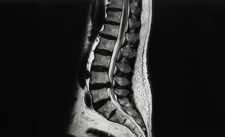
ATabes dorsalis(0%)
BSpondylolisthesis(3%)
CCauda equina syndrome(97%)
DLambert-Eaton(0%)
Your answerC
Correct answerC. Cauda equina syndrome
Vital Concept
Cauda equina syndrome is mostly caused by herniated intervertebral discs compressing the cauda equina nerve roots, usually at L4/5 or L5/S1 levels. This is a neurosurgical emergency and requires prompt diagnosis and treatment. Permanent damage and loss of function can result from delays in treatment.
Explanation
Cauda equina syndrome
Sagittal T2 images depict posterior herniation of the L4/5 intervertebral disc that spans the entirety of the central spinal canal and exerts significant compression on the cauda equina at this level, compatible with cauda equina syndrome. Herniated intervertebral disc is the most common cause of this entity. This is a neurosurgical emergency and requires prompt diagnosis and treatment. Permanent damage and loss of function can result from delays in treatment.
Incorrect Answers:
A. Tabes dorsalis is a form of neurosyphilis that is characterized by slowly progressive degeneration of the posterior column, posterior roots, and ganglion of the spinal cord. Radiologically it can present as neuropathic arthropathy, usually involving the hip, knee, or spine. On MRI it shows longitudinal T2W hyperintensity in the dorsal column of the spinal cord.
B. Spondylolisthesis, the anterior or posterior displacement of a vertebra, is generally slowly developing and results in chronic symptoms.
D. Lambert-Eaton is a neurologic condition similar to myasthenia gravis but does not cause loss of bladder control.
Vital Concept: Cauda equina syndrome is mostly caused by herniated intervertebral discs compressing the cauda equina nerve roots, usually at L4/5 or L5/S1 levels. This is a neurosurgical emergency and requires prompt diagnosis and treatment. Permanent damage and loss of function can result from delays in treatment.
Q2
hard QID 49046
Correct
Which of the following is true regarding the imaged lesion?
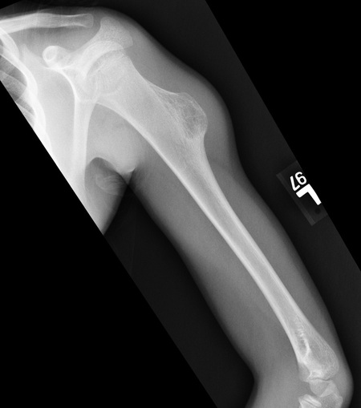
AMRI is necessary for diagnosis(20%)
BIt usually grows toward the joint(12%)
CThese are more often located in the axial skeleton(9%)
DThe most common vascular complication of this entity is pseudoaneurysm(59%)
Your answerD
Correct answerD. The most common vascular complication of this entity is pseudoaneurysm
Vital Concept
Pseudoaneurysm is the most common vascular complication of osteochondroma, predominantly affecting the femoropopliteal segment but also rarely involving the brachial artery in the upper extremity.
Explanation
The most common vascular complication of this entity is pseudoaneurysm
Osteochondromas are usually benign exostoses that arise from the extremities and are easily diagnosed with radiographs. However, MRI is used to image for complications such as nerve impingement, bursitis, degeneration to chondrosarcoma, and pseudoaneurysm formation. These lesions are often resected when complications develop. Additionally, these exostoses stop growing once the patient has reached skeletal maturation. The most common vascular complication of osteochondroma is pseudoaneurysm.
Vital Concept: Pseudoaneurysm is the most common vascular complication of osteochondroma, predominantly affecting the femoropopliteal segment but also rarely involving the brachial artery in the upper extremity.
Q3
hard QID 48110
Incorrect
A patient who has bleeding of the nail bed evident on physical exam admits to a hospital in a few days after a trauma and undergoes radiographic evaluation. Which of the following is of most specific concern based on the anteroposterior and lateral radiographic images below?
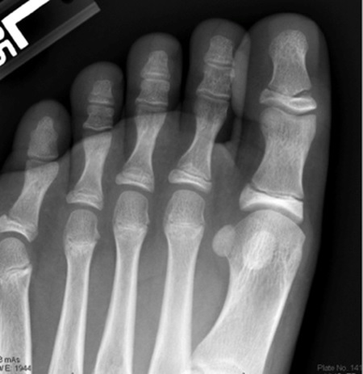
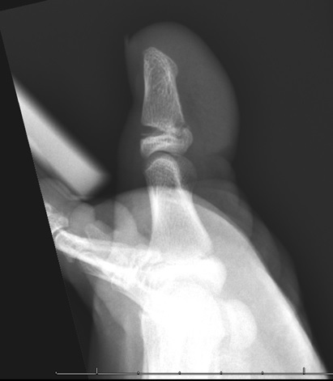
AFlexor hallucis longus injury(40%)
BForeign body(3%)
COsteomyelitis(49%)
DJuvenile rheumatoid arthritis(8%)
Your answerA
Correct answerC. Osteomyelitis
Vital Concept
Seymour fracture is an open Salter-Harris fracture of the distal phalanx with nail bed injury, creating communication between fracture and external environment with high risk of osteomyelitis requiring prompt surgical irrigation and antibiotics.
Explanation
Osteomyelitis
Because the nail bed inserts at the physis, a distal phalanx physeal fracture in the presence of a nail bed injury should always alert the clinician to the possibility of distal phalanx osteomyelitis, which is treated with antibiotics. Failure to recognize this complication can result in growth arrest.
Incorrect Answers:
A. This type of fracture is not specifically associated with flexor hallucis longus injury.
B. There is no foreign body demonstrated here.
D. This imaging supports the diagnosis of an acute Salter-Harris fracture secondary to trauma. Juvenile rheumatoid arthritis does not specifically present with these findings.
Vital Concept: Seymour fracture is an open Salter-Harris fracture of the distal phalanx with nail bed injury, creating communication between fracture and external environment with high risk of osteomyelitis requiring prompt surgical irrigation and antibiotics.
Q4
moderate QID 3055
Correct
A 79-year-old male patient with a longtime history of smoking and no prior history of malignancy presents with diffuse lower extremity pain. Plain films were negative for a fracture or arthritis, however, demonstrated diffuse bilateral periosteal reaction of the bilateral tibias/fibulas. A Tc-99m MDP bone scan was obtained for further evaluation; this study demonstrated symmetric linear accumulation of radiotracer involving the bilateral tibias and fibulas. The next most appropriate imaging study to recommend is:
AMRI of both lower extremities with and without gadolinium contrast.(2%)
BLower extremity angiography.(2%)
CNo additional imaging necessary.(7%)
DObtain a chest CT.(89%)
Your answerD
Correct answerD. Obtain a chest CT.
Vital Concept
Hypertrophic osteoarthropathy presents as symmetric "railroad-track" cortical uptake on bone scan with diffuse periostitis. In smokers, this strongly suggests underlying lung cancer (most commonly adenocarcinoma) requiring urgent chest imaging for primary tumor detection and staging.
Explanation
Obtain a chest CT.
Based on the radiographic and scintigraphic descriptions, the patient likely has hypertrophic osteoarthropathy (HOA). The next appropriate imaging study would be a chest CT to evaluate for pulmonary mass, especially given the patient's longtime history of smoking. HOA is a condition that can be primary or secondary. Primary HOA occurs predominantly in the adolescent age group, while secondary HOA occurs in older adults secondary to pulmonary pathology (malignancy, pneumonia, etc.). The pathogenesis behind this condition is unknown but thought to be secondary to the release of various cytokines. Uptake on a bone scan is diffuse and symmetric, most often occurring in the lower extremities (tibia and fibula). Other causes of diffuse bilateral lower extremity uptake include skeletal metastases, Paget's disease, and thyroid acropachy.
Incorrect Answers:
A. Scintigraphic examination demonstrates symmetric increased radiotracer uptake in the bilateral tibias/fibulas. MRI would likely redemonstrate findings of periostitis as described on plain film images, but likely not provide any additional information and would not be indicated at this time.
B. This examination is not indicated and would expose the patient to a large quantity of unnecessary radiation.
C. Because the findings are concerning for hypertrophic osteoarthropathy (as described below), further imaging of the chest is recommended to exclude underlying pulmonary mass.
Vital Concept: Hypertrophic osteoarthropathy presents as symmetric "railroad-track" cortical uptake on bone scan with diffuse periostitis. In smokers, this strongly suggests underlying lung cancer (most commonly adenocarcinoma) requiring urgent chest imaging for primary tumor detection and staging.
Q5
easy QID 37391
Correct
A 58-year-old patient is called back from screening mammography because of a mass seen in the lower outer quadrant of their right breast. The mass is confirmed on spot diagnostic mammograms and they have an ultrasound performed. Which of the following features of this lesion suggests a malignant etiology?
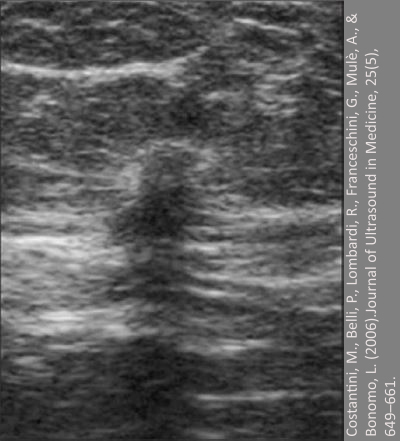
AGentle lobular contour(0%)
BHomogeneously echogenic echotexture(0%)
CDimensions that are not parallel(98%)
DEnhanced through transmission(1%)
EThin capsule(0%)
Your answerC
Correct answerC. Dimensions that are not parallel
Vital Concept
Malignant U/S features include spiculation, not parallel orientation, angular margins, micro-calcifications, and posterior acoustic shadowing.
Explanation
Dimensions that are not parallel
Not parallel orientation describes a breast mass that grows perpendicular or at an angle to the skin surface rather than along the natural tissue planes, creating a "taller than wide" appearance on ultrasound. This morphologic feature occurs because malignant tumors tend to grow aggressively across tissue boundaries and anatomic planes, while benign lesions typically expand along existing tissue architecture in a parallel fashion to the skin surface. The orientation is assessed by evaluating the relationship between the mass's longest axis and the skin surface, with steeper angles indicating greater likelihood of malignancy. Not parallel orientation is considered a suspicious BI-RADS ultrasound descriptor that, when present with other concerning features like irregular margins or heterogeneous echogenicity, substantially increases the positive predictive value for breast cancer and typically warrants tissue sampling.
Incorrect Answers:
A. This lesion has irregular contour consistent with malignancy
B. The lesion has a heterogeneous echogenic texture.
D. The lesion is not enhanced through transmission.
E. The lesion does not have a capsule.
Vital Concept: Malignant U/S features include spiculation, not parallel orientation, angular margins, micro-calcifications, and posterior acoustic shadowing.
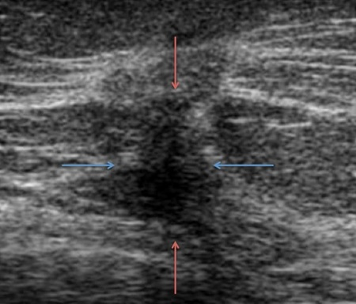
Q6
moderate QID 2764
Correct
Which of the following complications of gastric band placement is depicted in the image below?
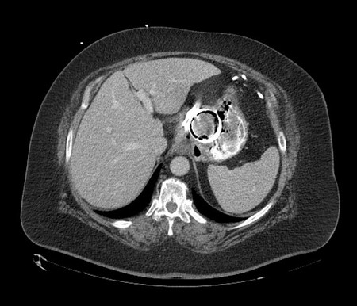
AGastric outlet obstruction(0%)
BGastric band slippage(11%)
CIntragastric erosion(89%)
DEsophageal dilatation(0%)
Your answerC
Correct answerC. Intragastric erosion
Vital Concept
Intragastric erosion of the gastric band is a delayed complication that possibly results from increased pressure against the gastric band resulting in necrosis and partial intraluminal migration. Given the risks of perforation, bowel obstruction and GI bleed, bands that have eroded into the gastric lumen are surgically removed.
Explanation
Intragastric erosion
The image shows approximately half of the gastric band residing within the lumen of the stomach with contrast/gas seen on either side of the band, most compatible with partial intragastric erosion. This delayed complication can result from small gastric wall injuries incurred during band placement, over-distention of the band with resultant gastric wall ischemia, band site infection, and inflammatory reaction.
Patients may present with nonspecific abdominal complaints such as vague epigastric pain, cessation of weight loss, or hematemesis, or turbid fluid may have been aspirated from the port. Recurrent port-site infections or inability to inflate the port may also be a sign of intragastric erosion.
Incorrect Answers:
A. CT images of gastric outlet obstruction will usually show dilated stomach lumen, which is not seen here.
B. Precontrast images for gastric band slippage will show a markedly distended fundus/upper body of the stomach herniated above the gastric band with abundant intraluminal fluid.
D. The presence of increased air bubble in the lumina of esophagus on a chest CT scan may be associated with esophageal disorders.
Vital Concept: Intragastric erosion of the gastric band is a delayed complication that possibly results from increased pressure against the gastric band resulting in necrosis and partial intraluminal migration. Given the risks of perforation, bowel obstruction and GI bleed, bands that have eroded into the gastric lumen are surgically removed.
Q7
moderate QID 43702
Correct
The signal characteristics of the left superomedial sinus mass in this patient with proptosis, diplopia, and headache are secondary to which of the following?
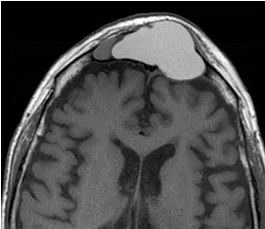
AFluid(4%)
BFat(13%)
CProtein(76%)
DHemorrhage(2%)
EHigh cellularity(5%)
Your answerC
Correct answerC. Protein
Explanation
Protein
The non-contrast T1-weighted magnetic resonance image (MRI) shows a hyperintense opacified, expanded left frontal sinus (red arrow) with smooth bony remodeling of walls (blue arrows), which, along with the clinical symptoms, is suggestive of sinonasal mucocele. Note that there is a smaller, low-signal (fluid) mucocele on the right (green arrow).
Sinonasal mucocele is seen most often in the frontal sinus, followed by the ethmoid, maxillary, and sphenoid sinuses.
Incorrect Answers:
A. The MR signal characteristics vary based on the fluid and protein content of the mass. High fluid content of mucus yields a low T1 signal, whereas protein content results in a high T1 signal.
B. and D. Although fat and hemorrhage also yield a high T1 signal, they are not present in sinonasal mucocele.
E. High cellularity is implied in imaging based on restricted diffusion, and to a lesser extent, low T1 and T2 signal. Sinonasal mucocele is a cystic entity, and contains no internal tissue.
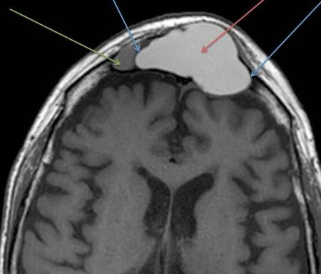
Q8
hard QID 2897
Correct
The Joint Commission defines a radiation sentinel event as a single field dose of:
A2 Gy(13%)
B3 Gy(7%)
C15 Gy(12%)
DThere is no longer a specific dose threshold for sentinel events.(67%)
E18 Gy(1%)
Your answerD
Correct answerD. There is no longer a specific dose threshold for sentinel events.
Vital Concept
The sentinel event threshold changed from dose-based (15 Gy PSD) to outcome-based (permanent tissue injury with substandard care), recognizing that high doses alone don't indicate poor practice, while tissue reactions can occur at lower doses when proper protocols aren't followed.
Explanation
There is no longer a specific dose threshold for sentinel events.
Per the Joint Commission in 2022, current sentinel event threshold is "Fluoroscopy resulting in permanent tissue injury when clinical and technical optimization were not implemented and/or recognized practice parameters were not followed." This represents a fundamental shift from dose-based to outcome-based criteria. The previously held 15 Gy peak skin dose threshold proved problematic because tissue reactions can occur below this level due to individual radiosensitivity variations, while some patients receiving doses above 15 Gy experience no effects. The new definition focuses on permanent tissue injury combined with substandard care rather than arbitrary dose limits. This requires demonstrating that clinical and technical optimization were not implemented or that recognized practice parameters were not followed.
Incorrect Answers:
A. B. C. E. There is no longer a specific dose threshold for sentinel events.
Vital Concept: The sentinel event threshold changed from dose-based (15 Gy PSD) to outcome-based (permanent tissue injury with substandard care), recognizing that high doses alone don't indicate poor practice, while tissue reactions can occur at lower doses when proper protocols aren't followed.
Q9
hard QID 5055
Incorrect
Which of the following does the graph depict?
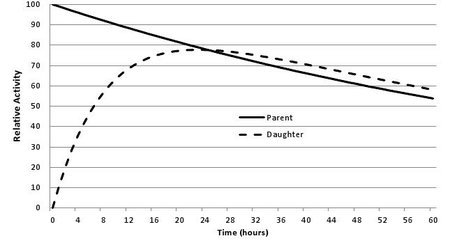
ACompetitive equilibrium(4%)
BChemical equilibrium(7%)
CDynamic equilibrium(16%)
DSecular equilibrium(19%)
ETransient equilibrium(55%)
Your answerD
Correct answerE. Transient equilibrium
Explanation
Transient equilibrium
Transient equilibrium is a state in which the daughter radionuclide half-life is shorter than that of the parent radionuclide. However, the daughter half-life is not negligible compared to the parent half-life, which is typically approximately 10 times longer than the daughter half-life. The classic example is the 99Mo/99mTc generator, which is the example depicted in this graph. The half-life of 99Mo is 66 hours, while the half-life of 99mTc is approximately 6 hours. Note that after about 10 half-lives of 99mTc, only about 50% of the parent radionuclide activity remains. Typically, transient equilibrium is reached after about 4 daughter half-lives, as seen in this example, where transient equilibrium occurs after 24 hours.
Incorrect Answers:
A. Competitive equilibrium describes an economic environment where buyers and sellers are small relative to the size of the market.
B. Chemical equilibrium describes a state in which the concentrations of the reactants and products of a chemical reaction remain stable over time.
C. Dynamic equilibrium describes a state in which two reversible chemical processes occur at the same state.
D. Secular equilibrium describes a state in which a radioactive daughter element's production rate is balanced by its own decay rate. The parent element in secular equilibrium is typically a radioactive material with a relatively long half-life, more than 100 times the half-life of the daughter material. One such example would be radon-222, with a half-life of 3.8 days, which originates from the radioactive decay of radium-226, which has a half-life of approximately 1,600 years. Secular equilibrium typically occurs after about 7 half-lives of the daughter nucleus.
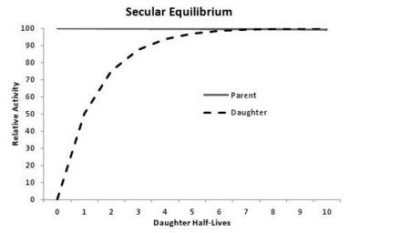
Q10
moderate QID 4939
Correct
A 22-year-old female presents with a left upper outer quadrant palpable breast mass. Which of the following is the most appropriate next step?
ASingle view left breast mammogram(0%)
BTwo views left breast mammogram(2%)
CUltrasound of the whole breast(8%)
DTargeted ultrasound of the palpable area(90%)
Your answerD
Correct answerD. Targeted ultrasound of the palpable area
Vital Concept
Targeted ultrasound to the palpable finding is the appropriate initial imaging for women under 30 due to low cancer incidence and dense breast tissue limiting mammographic sensitivity.
Explanation
Targeted ultrasound of the palpable area
Ultrasound of the palpable area is the most appropriate next step in a young female with a palpable mass.
Incorrect Answers:
A. A mammogram is not the first study of choice in a young female as the breasts in this age group are usually very dense, which limits the diagnostic value of the study. Also, a single-view mammogram is not appropriate for a screening exam.
B. A mammogram is not the first study of choice in a 22-year-old as the breasts in this age group are usually very dense, which limits the diagnostic value of the study.
C. Ultrasound examination of the whole breast is not indicated when the main complaint is a palpable mass.
Vital Concept: Targeted ultrasound to the palpable finding is the appropriate initial imaging for women under 30 due to low cancer incidence and dense breast tissue limiting mammographic sensitivity.
Q11
hard QID 47073
Correct
A 55-year-old male patient presents with epigastric pain. The patient reports no recent medication use for current symptomatic complaints. The finding shown below most likely represents which of the following?
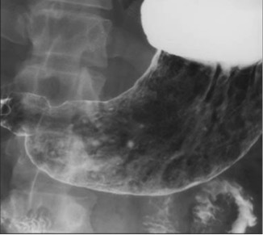
AHelicobacter pylori infection(71%)
BNSAIDs(13%)
CCorticosteroids(0%)
DSevere physiological stress(2%)
EZollinger-Ellison syndrome(14%)
Your answerA
Correct answerA. Helicobacter pylori infection
Explanation
Helicobacter pylori infection
The principal cause of peptic ulcer disease is Helicobacter pylori infection, which affects approximately 42% of patients with peptic ulcer disease, and aspirin or nonsteroidal anti-inflammatory drug (NSAID) use, which are etiologic factors in approximately 36% of people with peptic ulcer disease.
Incorrect Answers:
B. NSAID medication is the second common cause of peptic ulcers, and the patient does not have a NSAID medication history.
C. The patient history does not support this explanation either
D. There is no recent physiologic stress indicated in the question stem to specifically support this answer.
E. This is less common than H. pylori infection and NSAIDs as a cause of gastric erosions.
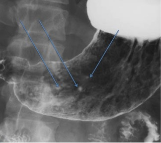
Q12
QID 2760
Correct
An 82-year-old male presented with an 18-month history of intermittent right upper quadrant abdominal pain with acute onset diffuse abdominal pain and cramps for one day. He reports no fever but has had moderate nausea and vomiting. A CT scan was performed. What is the diagnosis?
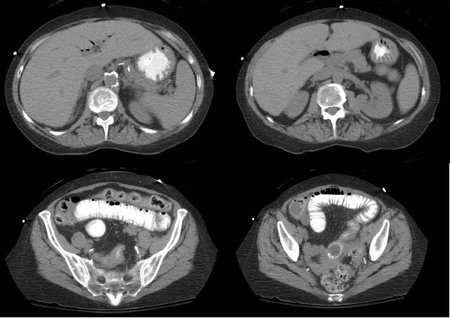
APortal venous gas(8%)
BBezoar(1%)
CGallstone ileus(91%)
DCholangitis(0%)
Your answerC
Correct answerC. Gallstone ileus
Vital Concept
Rigler's triad of pneumobilia, small bowel obstruction, and gallstone are characteristic of gallstone ileus.
Explanation
Gallstone ileus
Gallstone ileus is an uncommon cause of small bowel obstruction. Usually presenting in older adults, gallstone ileus occurs as a result of chronic gallbladder inflammation resulting in communication between the gallbladder and small bowel. With this communication established, gallstones can pass more freely into the bowel. If a stone large enough passes to the small bowel, small bowel obstruction can occur, usually when the stone is unable to pass the ileocolic valve.
Incorrect Answers:
A. This is not a portal venous gas. It is central, which is consistent with pneumobilia. Portal venous gas is peripheral.
B. The obstructing lesion has the typical appearance of a stone with peripheral rim calcification and round well-defined shape. The presence of pneumobilia in conjunction with this structure is more consistent with gallstone ileus.
D. Though cholangitis can present with pneumobilia, the presence of gallstone causing bowel obstruction is more consistent with gallstone ileus.
Vital Concept: Rigler's triad of pneumobilia, small bowel obstruction, and gallstone are characteristic of gallstone ileus.
Q13
easy QID 20595
Correct
A 42-year-old female patient presents with a painless, rapidly growing mass in their breast. Given the image shown below, which of the following is the most likely diagnosis?
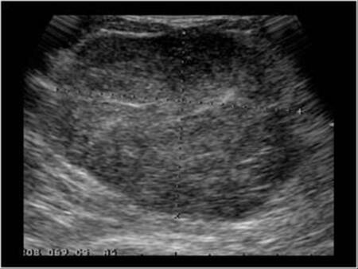
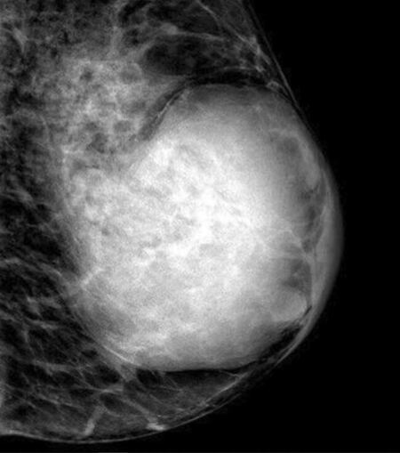
AInvasive ductal carcinoma(1%)
BBenign cyst(1%)
CInflammatory breast cancer(2%)
DPhyllodes tumor(96%)
EAbscess(1%)
Your answerD
Correct answerD. Phyllodes tumor
Explanation
Phyllodes tumor
Phyllodes tumors are uncommon fibroepithelial breast tumors that are capable of a diverse range of biologic behaviors. In their least aggressive form, phyllodes tumors behave like benign fibroadenomas, although with a propensity to recur locally following excision without wide margins. At the other end of the spectrum, other phyllodes tumors can metastasize distantly, sometimes degenerating histologically into sarcomatous lesions that lack an epithelial component.
The term "phyllodes," which means leaf-like, describes the typical papillary projections that are seen on pathologic examination. Although they were originally called "cystosarcoma phyllodes" by Johannes Müller in 1838, phyllodes tumors only occasionally have cystic components and are not true sarcomas by either cellular origin or biologic behavior. The terminology has since evolved, with over 60 synonyms having been applied to this entity before the term "phyllodes tumors" was adopted by the World Health Organization.
This is most likely a Phyllodes tumor, which is most common in the 4th to 6th decades and presents as a rapidly growing painless mass appearing similar to a fibroadenoma on imaging.
Incorrect Answers:
A. Invasive ductal carcinoma would most likely appear as a spiculated hyperdense lesion on mammogram, while on ultrasound would most likely appear as an ill-defined, hypoechoic mass. Branched and spiculated patterns with associated microcalcifications may be noted as well.
B. A benign cyst would appear as a well-circumscribed lesion with an anechoic signal on ultrasound.
C. Inflammatory breast cancer may or may not have a tumor mass/calcifications, but by definition would have associated inflammatory changes such as increased density of the breast and skin/trabecular thickening.
E. A breast abscess usually has more pertinent findings on ultrasound, which include hypoechoic collections with multilocular features.
Q14
easy QID 37608
Correct
A physician is reading studies from an outpatient imaging center when the computed tomography (CT) technologist calls and says that a patient who was just scanned is complaining of new chest tightness following a pulmonary embolus (PE) CT study. The physician evaluates the patient, who states that they started to feel "pressure and tightness" in their chest immediately following the injection of contrast. They also complain of lightheadedness. They physician takes their vital signs and finds a heart rate of 152/min, SpO2 of 96% while taking 18 breaths per min, and a blood pressure of 86/58 mmHg. The patient is wheezing and has urticaria. The physician first tells the technologist to call 911. Which of the following is the next best therapy indicated in this situation?
AEpinephrine 0.3 mL of 1mg/mL IM (or auto-injector) or Epinephrine 1 mL of 1mg/10mL (0.1 mg/mL) IV with slow flush or IV fluids.(96%)
BAtropine 0.6 to 1mg IV(1%)
CBenadryl 50mg IV(2%)
DNaloxone 0.5 mg IV(0%)
EAdenosine 6mg IV(1%)
Your answerA
Correct answerA. Epinephrine 0.3 mL of 1mg/mL IM (or auto-injector)
Vital Concept
Intramuscular epinephrine is the best initial treatment route for a patient who develops wheezing, urticaria, hypotension, and tachycardia after a CT scan with contrast. Intramuscular administration in the mid-outer thigh is preferred for rapid absorption and safety. Intravenous epinephrine is reserved for refractory cases due to higher risk of adverse events and dosing errors.
Explanation
Epinephrine 0.3 mL of 1mg/mL IM (or auto-injector)
or
Epinephrine 1 mL of 1mg/10mL (0.1 mg/mL) IV with slow flush or IV fluids.
Epinephrine is a catecholamine used in the treatment of tachycardia and hypotension seen in severe anaphylaxis and anaphylactic shock. It may be administered either intravenously (IV) or intramuscularly (IM).
Incorrect Answers:
B. Atropine is a muscarinic acetylcholine antagonist and is useful in the treatment of bradycardia and hypotension, not tachycardia.
C. Diphenhydramine (Benadryl) is an antihistamine that also possesses some anticholinergic effects. It is often used for treatment of urticaria and/or pruritis in cases of mild intravenous contrast reactions.
D. Naloxone is a competitive opioid antagonist that can be used in the reversal of excessive intravenous conscious sedation if an opioid such as fentanyl was used.
E. Adenosine is used in the treatment of supraventricular tachycardia through its action on cardiac A2 adenosine receptors.
Vital Concept: Intramuscular epinephrine is the best initial treatment route for a patient who develops wheezing, urticaria, hypotension, and tachycardia after a CT scan with contrast. Intramuscular administration in the mid-outer thigh is preferred for rapid absorption and safety. Intravenous epinephrine is reserved for refractory cases due to higher risk of adverse events and dosing errors.
Q15
hard QID 4934
Correct
A 24-year-old female presents for evaluation of a non-palpable mass in the left breast at 3 o'clock position which was an incidental finding at mammography; zoomed-in ultrasound images are also shown below. Which of the following is the most likely diagnosis and appropriate management?
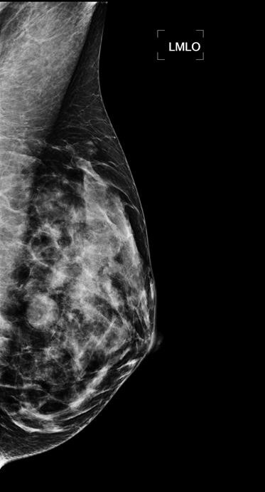
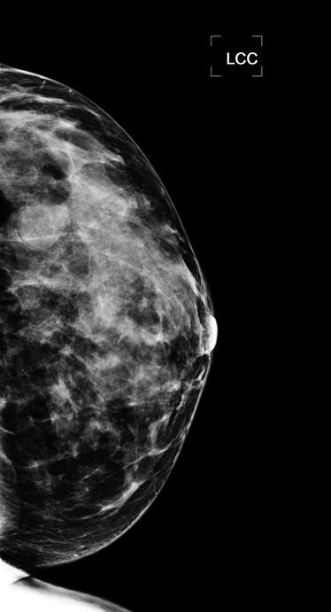
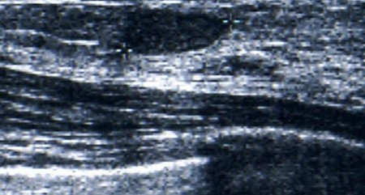
ASimple cyst; No further management necessary(10%)
BIntraductal papilloma; Biopsy to exclude malignancy(0%)
CFibroadenoma; No further management necessary(20%)
Classic fibroadenoma appears as oval, circumscribed, isodense mass on mammography and homogeneous hypoechoic mass with circumscribed margins on ultrasound, as seen here. When imaging features are typical, conservative management with imaging surveillance up to 2 years is appropriate (BI-RADS 3), provided growth remains <20% in any 6-month period.
Explanation
Fibroadenoma; Short-term follow-up
Patient presentation and imaging features of this lesion are characteristic of a benign fibroadenoma (rounded, well-defined margins, homogenously hypoechoic).
Follow-up ultrasonography would be indicated in 6 months, with a biopsy performed if the lesion demonstrates atypical features or enlargement, or in some instances, for patient peace of mind. The concern is that this could represent phyllodes tumor, which has similar imaging features.
Incorrect Answers:
A. While the lesion is well-circumscribed on both mammographic views and ultrasound images, it is not anechoic, as one would expect for a simple cyst.
B. Imaging features are not characteristic of an intraductal papilloma, which is typically identified as a lobulated solid hypoechoic mass within a dilated duct.
C. While patient presentation and imaging features of this lesion are characteristic of a benign fibroadenoma (rounded, well-defined margins, homogeneously hypoechoic), the management is incorrect. Literature suggests that suspected fibroadenomas be routinely monitored via ultrasound, with core biopsy recommended for lesions demonstrating atypical imaging findings, interval enlargement, and those greater than 2.5 cm without prior comparison studies (though some institutions may perform core biopsy in this setting).
D. Imaging features of this lesion are benign.
Vital Concept: Classic fibroadenoma appears as oval, circumscribed, isodense mass on mammography and homogeneous hypoechoic mass with circumscribed margins on ultrasound, as seen here. When imaging features are typical, conservative management with imaging surveillance up to 2 years is appropriate (BI-RADS 3), provided growth remains <20% in any 6-month period.
Q16
easy QID 3005
Correct
A 25-year-old male presents to an outpatient imaging center for a scrotal ultrasound. Which of the following statements is true regarding his diagnosis?
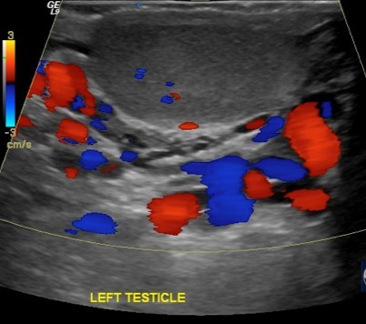
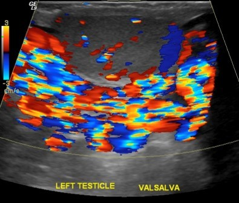
AThe patient likely has a renal tumor.(1%)
BA left-sided presentation is unusual.(1%)
CThe finding is bilateral in 50% of patients.(5%)
DInfertility is a concern.(93%)
EThe patient is at increased risk for testicular torsion.(1%)
Your answerD
Correct answerD. Infertility is a concern.
Vital Concept
Isolated left-sided varicoceles are typically idiopathic due to anatomical differences—the left testicular vein drains perpendicular into the left renal vein while the right drains obliquely into the IVC. Isolated right-sided varicocele or new varicocele in older patients should prompt evaluation for secondary causes (such as external compression, thrombus or malignancy).
Explanation
Infertility is a concern.
The patient in question has a left-sided varicocele. A varicocele is defined as dilatation of the veins of the pampiniform plexus > 2 to 3 mm in diameter secondary to retrograde venous flow. The most common clinical presentation is vague scrotal discomfort and infertility. The majority are left-sided (80%), and they are bilateral in 15% of patients.
Varicoceles can be primary or secondary. Primary varicoceles are caused by incompetent venous valves, while secondary varicoceles can be caused by extrinsic compression from retroperitoneal mass or surrounding structures, thrombus or splenorenal shunting. An isolated right-sided varicocele should raise suspicion for a secondary cause and prompt additional imaging.
Ultrasound with and without Valsalva is the preferred imaging modality. Treatment options include catheter embolization and surgical ligation. The prognosis is excellent following treatment.
Incorrect Answers:
A. As stated above, the patient in question has a left-sided varicocele.
B. C. The majority are left-sided (80%), and they are bilateral in 15% of patients.
E. Varicoceles do not increase the risk of testicular torsion.
Vital Concept: Isolated left-sided varicoceles are typically idiopathic due to anatomical differences—the left testicular vein drains perpendicular into the left renal vein while the right drains obliquely into the IVC. Isolated right-sided varicocele or new varicocele in older patients should prompt evaluation for secondary causes (such as external compression, thrombus or malignancy).
Q17
moderate QID 56772
Incorrect
A 33-year-old woman presents with finger pain and undergoes radiography. Based on the imaging findings, what other organ system typically manifests symptoms of the same disease process?
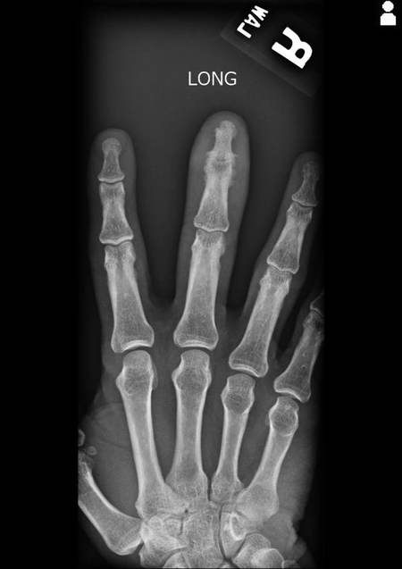
ALiver(1%)
BRespiratory system(7%)
CSkin(90%)
DCentral nervous system(1%)
Your answerD
Correct answerC. Skin
Explanation
Skin
The radiograph shows periostitis and joint space loss involving the middle-finger distal interphalangeal joint (yellow arrow). Additionally, there is marked associated soft tissue swelling of the digit (red arrow), consistent with dactylitis. Findings are classical for psoriatic arthritis. Later stages of disease result in arthritis mutilans and joint ankylosis. In addition to the peripheral joints, psoriatic arthritis may also involve parts of the axial skeleton such as the sacroiliac joints. The most common extra-osseous finding are psoriatic plaques in the skin, which typically involve the extensor surfaces and demonstrate a raised erythematous lesion with a scaly appearance. In some instances, osseous findings may precede the cutaneous findings.
Incorrect Answers:
A. Psoriatic arthritis has no known hepatic involvement.
B. Although rare reports of pulmonary fibrosis have been seen in the setting of psoriatic arthritis, this is not the best answer.
D. Psoriatic arthritis has no known central nervous system involvement.
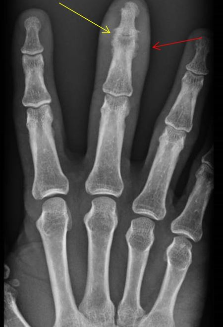
Q18
moderate QID 47105
Correct
A 64-year-old male patient with a history of carotid stenosis presents for doppler ultrasound evaluation. Which of the following is their degree of stenosis based on the image below?
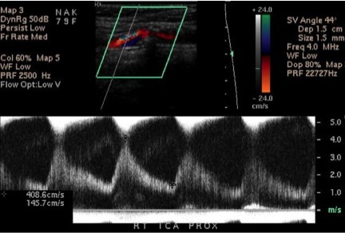
A<50%(1%)
B50 to 69%(4%)
C70 to 99%(86%)
DNear total occlusion(10%)
ETotal occlusion(0%)
Your answerC
Correct answerC. 70 to 99%
Vital Concept
IAC Vascular Testing updated carotid stenosis criteria, raising the peak systolic velocity threshold for 50% ICA stenosis from 125 cm/sec to 180 cm/sec due to the original SRU threshold being overly sensitive with poor specificity.
Explanation
70 to 99%
The image provided is from a spectral Doppler evaluation of a stenosis in the internal carotid artery (ICA). Carotid atherosclerosis is the leading cause of cerebral vascular accident (CVA) in the United States and the third leading cause of morbidity and mortality. Although angiography is the gold standard, it is invasive and expensive. Ultrasound provides a means to evaluate the degree of stenosis. The Society of Radiologists in Ultrasound (SRU) consensus developed recommendations for the diagnosis and stratification of ICA stenosis based on internal carotid peak systolic velocity; these criteria were updated based on recommendations from the Intersocietal Accreditation Commission (IAC) for Vascular Testing in 2023. Elevation of the internal carotid artery peak systolic velocity (PSV) has been shown to be the single most useful Doppler sonographic parameter for detecting hemodynamically significant carotid stenosis and for selecting patients for carotid endarterectomy. Additional criteria include ICA/common carotid artery (CCA) peak systolic velocity ratio and end-diastolic velocity.
The grading system based on ICA PSV is as follows (with updated IAC criteria):
< 50% stenosis: PSV < 125 cm/s
50 to 69% stenosis: PSV 180-229 cm/s if ICA/CCA ratio is NOT greater than 2.0; otherwise, PSV 125-229 cm/s
≥ 70% to 99% stenosis: PSV ≥ 230 cm/s
Near occlusion: High/low-velocity trickle flow
Occlusion: Absent flow
Incorrect Answers:
A, B, D, E are incorrect according to the explanation above.
Vital Concept: IAC Vascular Testing updated carotid stenosis criteria, raising the peak systolic velocity threshold for 50% ICA stenosis from 125 cm/sec to 180 cm/sec due to the original SRU threshold being overly sensitive with poor specificity.
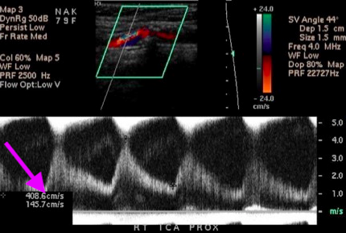
Q19
easy QID 2693
Correct
Regarding silicone implant rupture, which of the following is true?
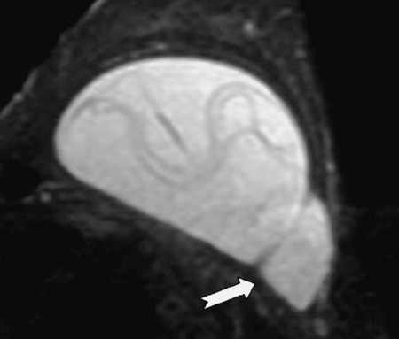
AThe majority of implant ruptures are extracapsular.(1%)
BImplant rupture is best diagnosed with ultrasound.(1%)
CThe linguine sign is classically seen with intracapsular rupture.(97%)
DIntracapsular rupture can be diagnosed with mammogram.(1%)
Your answerC
Correct answerC. The linguine sign is classically seen with intracapsular rupture.
Explanation
The linguine sign is classically seen with intracapsular rupture.
The linguine sign reflects the collapsed shell and is seen with intracapsular rupture.
An implant rupture is a recognized complication of a breast implant. They can be intracapsular or extracapsular. The vast majority of implant ruptures are intracapsular. In intracapsular rupture, the silicone is contained by a fibrous capsule (scar). The collapsed shell appears on MRI as a group of wavy lines (linguine sign).
Incorrect Answers:
A. Most implant ruptures are intracapsular in nature.
B. Implant rupture is best diagnosed with MRI.
D. Detecting intracapsular rupture with mammography is difficult.
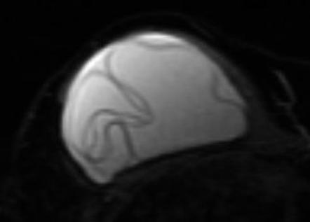
Q20
hard QID 2915
Correct
A container of 500 mCi of 201Tl is stored for decay-in-storage for 10 half-lives. For this to be true, this container will need to be stored for about:
A1 to 2 days.(2%)
B5 to 7 days.(6%)
C10 to 14 days.(15%)
D30 to 60 days.(69%)
E6 to 12 months.(3%)
Your answerD
Correct answerD. 30 to 60 days.
Explanation
30 to 60 days.
Tl's short half life (3.05 days) makes rigorous inventory tracking unnecessary. Since Tl's physical half-life is less than or equal to 120 days, decay-in-storage can occur before disposal. Given its half life of 3.05 days, 10 half lives would be in the 30 to 60 day range.
Incorrect Answers:
A. B. C. E. These are incorrect time windows, as discussed above.
Q21
moderate QID 56808
Correct
An axial T2 fat-saturated image of the left shoulder is shown. Which of the following is most accurate regarding this MRI?
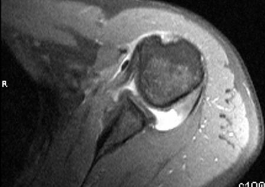
AGlenohumeral cartilage loss with resulting osteoarthritis(1%)
BFull-thickness tear of subscapularis tendon with retraction to glenoid(6%)
CMedial dislocation of long head of biceps tendon(89%)
DHill-Sachs fracture(4%)
Your answerC
Correct answerC. Medial dislocation of long head of biceps tendon
Explanation
Medial dislocation of long head of biceps tendon
The long head of the biceps tendon, which normally sits within the biceps groove at the anterior aspect humeral head, is medially dislocated and is immediately anterior to the subscapularis tendon. The biceps groove is empty. This implies a tear of the biceps pulley.
Incorrect Answers:
A. The visualized portion of the glenohumeral cartilage is normal without any defect and/or osteophyte formation to suggest osteoarthritis.
B. The visualized portion of the subscapularis tendon is normal, inserting on the lesser tuberosity of the humerus. Because there is a medial biceps dislocation, there may be a partial tear of the distal-most fibers of the subscapularis tendon. However, there is no tendon retraction.
D. There is no fracture (marrow edema, linear low signal within the bone) evident. The apparent flattening at the posterior aspect of the humeral head is a normal morphology and should not be mistaken for a Hill-Sachs fracture.
Q22
hard QID 44014
Correct
Of the following options, which is the most common early clinical manifestation of the demyelinating process shown?
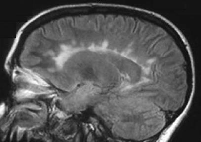
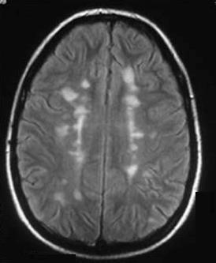
AOptic neuritis(74%)
BCognitive impairment(21%)
CSpastic paraparesis(4%)
DCerebellar ataxia(0%)
EBladder dysfunction(1%)
Your answerA
Correct answerA. Optic neuritis
Vital Concept
Optic neuritis as a first demyelinating event carries significant long-term risk — approximately 50% of patients presenting with isolated optic neuritis will develop clinically definite MS within 15 years, with MRI white matter lesions at presentation substantially increasing that risk.
Explanation
Optic neuritis
The sagittal and axial magnetic resonance images show confluent, perpendicular, pericallosal white matter signal lesions, so-called Dawson’s finger lesions, which are a classic imaging feature of multiple sclerosis (MS).
Optic neuritis — typically presenting as unilateral painful vision loss with a relative afferent pupillary defect — is the most common initial presenting symptom of MS, occurring in approximately 20-25% of patients. It results from demyelination of the optic nerve and often precedes other neurologic manifestations by months to years.
Incorrect Answers:
B. Cognitive impairment is common in established MS but rarely the presenting complaint.
C. Spastic paraparesis reflects spinal cord involvement and is more typical of progressive MS than initial presentation.
D. Cerebellar ataxia occurs in MS but is not the most common presenting feature.
E. Bladder dysfunction is prevalent in MS overall but typically emerges after other symptoms are established.
Vital Concept: Optic neuritis as a first demyelinating event carries significant long-term risk — approximately 50% of patients presenting with isolated optic neuritis will develop clinically definite MS within 15 years, with MRI white matter lesions at presentation substantially increasing that risk.
Q23
moderate QID 39274
Correct
Which of the following is the most common complication of the pelvic lesion depicted below? There is no color Doppler flow detected in the solid component of this finding.
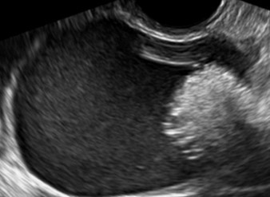
ACyst rupture(9%)
BOvarian torsion(84%)
CMalignant transformation(4%)
DSuperimposed infection(1%)
EBowel obstruction(2%)
Your answerB
Correct answerB. Ovarian torsion
Explanation
Ovarian torsion
The pelvic ultrasound demonstrates a cystic mass with dots of echogenicity (green arrows) and a brightly echogenic mural nodule (blue arrow) with posterior acoustic shadowing. This is one of the many sonographic appearances of a dermoid cyst. Ovarian dermoid cysts are slow-growing tumors that contain elements from dermal and epidermal germ cell layers. They are best assessed with ultrasound.
Uncomplicated ovarian dermoids tend to be asymptomatic and are often discovered incidentally. These tumors may predispose a number of complications. By far, the most common is ovarian torsion, which is reported in 10-15% of cases. For this reason, larger tumors are often surgically excised. Although there is no cutoff in terms of size, 7 cm is a general consensus for intervention.
Incorrect Answers:
A. Less frequently, these cysts may rupture (up to 4%) and cause pain.
C. Rarely, in approximately 1-2% of cases these cysts can undergo malignant transformation.
D. Superimposed infection of a cyst is rare, reported in less than 1% of cases.
E. There have been a few case reports of very large dermoids causing small bowel obstruction, but it is exceedingly rare.
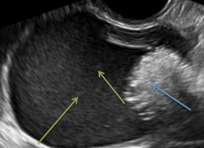
Q24
easy QID 21558
Correct
A 46-year-old female patient presents for follow-up after percutaneous biopsy for diagnosis of hepatic masses. Which of the following diagnosis must be communicated most urgently?
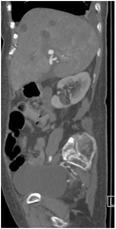
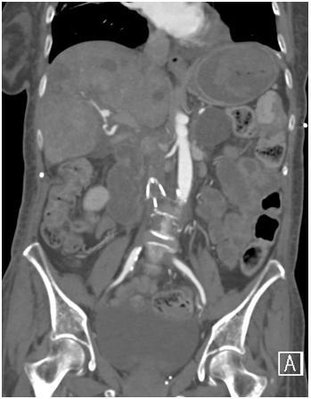
AIVC filter tilt(1%)
BIVC thrombus(3%)
CHepatic infarction(1%)
DHepatic artery aneurysm(4%)
EHepatic artery pseudoaneurysm(91%)
Your answerE
Correct answerE. Hepatic artery pseudoaneurysm
Explanation
Hepatic artery pseudoaneurysm
A prominent outpouching is seen on arterial phase imaging of the right hepatic artery (red arrows). In the setting of recent percutaneous liver biopsy, in this case for numerous metastases (green arrows), this is highly suspicious for the development of pseudoaneurysm. Pseudoaneurysms are vascular outpouchings that result from disruption of one or more layers of the vascular wall. They are usually traumatic or, as in this case, iatrogenic. They may be thought of as contained ruptures and are by definition unstable, most frequently requiring intervention such as coil embolization to prevent severe acute hemorrhage.
Incorrect Answers:
A. IVC filter tilt is not an emergent finding in this case, as the filter is not severely tilted, and there is no evidence for impending embolization. A filter tilt greater than 15° can lead to significant difficulty in subsequent filter retrieval.
B. The images presented are in the arterial phase of contrast, and as such, no comment can be made with regard to the patency of the IVC or presence of a thrombus within its lumen.
C. The multiple hepatic hypodensities seen in this examination are presumably related to the known hepatic metastases. There is no evidence of hepatic infarction. Due to the liver’s dual vascular supply, hepatic infarctions are quite rare, even in the setting of portal vein or hepatic arterial embolization.
D. Given the recent history of percutaneous biopsy, the vascular outpouching seen at the hepatic artery is more concerning for the presence of pseudoaneurysm rather than aneurysm and as such, is a more acute finding.
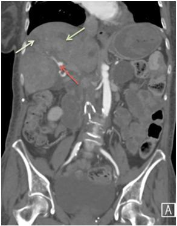
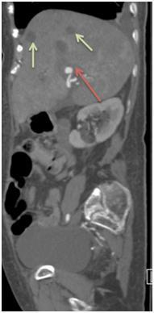
Q25
hard QID 43830
Correct
Which of the following is the underlying cause of marrow edema in this 65-year-old female patient with medial knee pain?
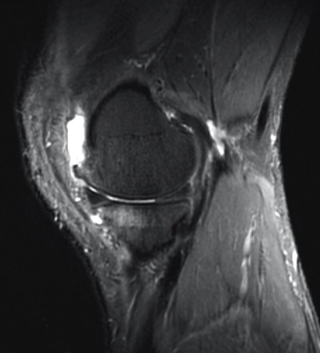
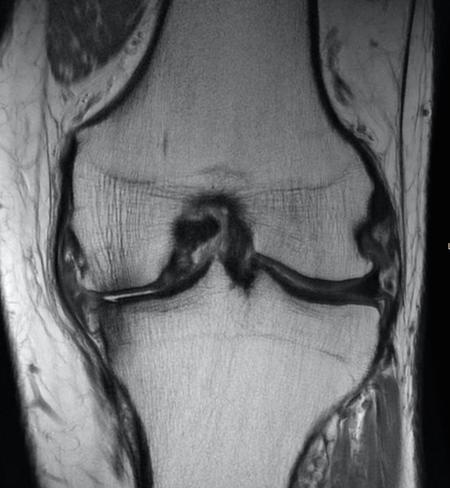
AAcute fracture(38%)
BOsteoarthritis(49%)
CRecent translational event(12%)
DInflammatory arthritis(0%)
EOsteomyelitis(0%)
Your answerB
Correct answerB. Osteoarthritis
Explanation
Osteoarthritis
The coronal proton density weighted and sagittal fat-saturated T2 images show a large region of exposed bone over the outer aspect of the medial femorotibial compartment (yellow arrow), with marginal osteophytes (red arrows), and a region of marrow edema at the anterior aspect of the tibial plateau (blue arrow). Note also that there is subchondral sclerosis on the PD weighted image (orange arrows), seen as hypointense trabecular condensation (orange arrows). These are all findings of osteoarthritis. The marrow edema in this case is reactive, as is the small effusion.
Incorrect Answers:
A. Acute fracture is incorrect. A clear fracture line is typically evident, as a hypointense line on all imaging sequences, and the degree of marrow edema is more pronounced and striking.
C. A recent translational event would produce a reciprocal, or kissing pattern, of marrow edema, which is not present in this case.
D. Bone marrow edema is a feature seen in inflammatory arthritis, both in the early and late stages. However, other features of inflammatory arthritis, such as synovitis and erosions, are not present.
E. Osteomyelitis is incorrect. Although marrow edema is present in cases of infection, it is typically greater in extent and also present in the surrounding soft tissues. A joint effusion, synovitis, and in severe cases, cortical destruction would also be expected.
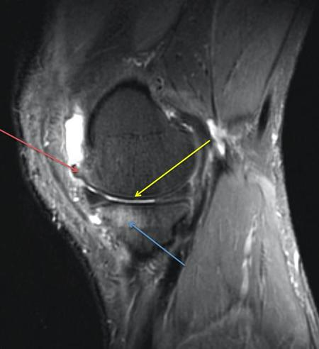
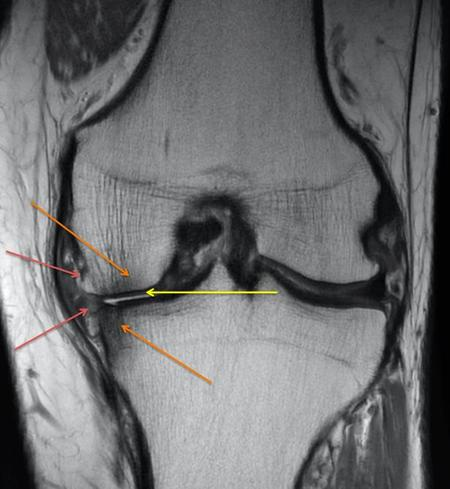
Q26
easy QID 24093
Correct
As well as can be ascertained from a screening image, what is the appropriate description for the margins of this mass in terms of the BI-RADS lexicon?
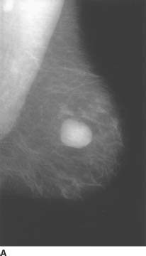
ACircumscribed(97%)
BMicrolobulated(1%)
CObscured(2%)
DIndistinct(0%)
ESpiculated(0%)
Your answerA
Correct answerA. Circumscribed
Vital Concept
Circumscribed margins on mammography are well-defined; smooth borders typically associated with benign lesions, contrasting with suspicious irregular or spiculated margins that suggest malignancy.
Explanation
Circumscribed
Margins are modifiers that describe the shape of a mass. In a circumscribed mass, the margin is sharply demarcated. For a mass to qualify as "circumscribed,” at least 75% of the margin must be well-defined. The remainder of the mass should be no worse than obscured by overlying tissue. There should be an abrupt transition between the lesion and the surrounding tissue.
Incorrect Answers:
B. In a microlobulated mass, the short cycles of the margin produce small undulations.
C. An obscured margin is one where the margin is hidden by superimposed or adjacent normal tissue. This is used when the interpreting physician believes that the mass is circumscribed, but the margin is hidden.
D. In an indistinct mass, the poor definition of the margin or any portion of the margin raises concern that there may be infiltration by the lesion, and this appearance is not likely due to superimposed normal breast tissue.
E. A spiculated mass is characterized by lines radiating from the margin of a mass.
Vital Concept: Circumscribed margins on mammography are well-defined; smooth borders typically associated with benign lesions, contrasting with suspicious irregular or spiculated margins that suggest malignancy.
Q27
moderate QID 43746
Correct
Which of the following is the most common paranasal sinus malignancy?
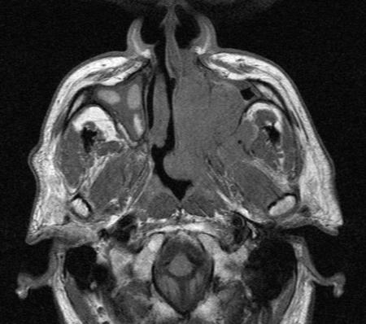
AAdenocarcinoma(3%)
BSquamous cell carcinoma(86%)
CInverting papilloma(10%)
DNon-Hodgkin lymphoma(1%)
EUndifferentiated carcinoma(2%)
Your answerB
Correct answerB. Squamous cell carcinoma
Explanation
Squamous cell carcinoma
Squamous cell carcinoma is the most common primary malignancy of the paranasal sinus, accounting for approximately 70% of all primary malignancies of the nasopharynx, more than all of the other answer choices combined. Although the incidence and prevalence are less frequent in Western populations, it is one of the most common malignancies in Asia, particularly China. The average age at presentation is 50-70 years old, with an overall relatively poor prognosis (5-year survival is about 60%). This is because the clinical presentation may be delayed until the tumor has grown significantly in size and has invaded adjacent structures, causing apparent cervical nodal metastases, cranial nerve palsies, tinnitus, or headache. Early but often-ignored symptoms include nasal obstruction, epistaxis, or conductive hearing loss secondary to Eustachian tube obstruction. Imaging plays a key role in diagnosis in the minority of patients who have submucosal disease, with normal appearing overlying mucosa, as well as in staging and treatment planning of all patients.
Q28
QID 4946
Correct
Nuclear myocardial perfusion scanning is optimally performed with which of the following techniques?
AAerobic exercise(73%)
BRegadenoson(19%)
CDobutamine(4%)
DAdenosine(3%)
EDipyridamole(2%)
Your answerA
Correct answerA. Aerobic exercise
Vital Concept
Upright aerobic exercise (typically treadmill) remains the optimal method of stress testing because it produces the largest increase in cardiac output and coronary blood flow.
Explanation
Aerobic exercise
Exercise stress is the optimal nuclear cardiac technique when patients can achieve adequate heart rate response, providing physiologic stress as well as valuable correlation with functional capacity and symptoms. Pharmacologic stress is reserved for patients unable to exercise due to orthopedic, pulmonary, or neurologic limitations. Pharmacological methods generally provide less physiologic stress than exercise and cannot assess functional capacity or reproduce exercise-related symptoms.
Incorrect Answers:
B. A large percentage of patients with heart disease are unable to optimally exercise due to intolerance for various reasons. In these patients, pharmacologic testing is the only option. Regadenoson has become the agent of choice in most patients due to its safety profile.
C. Dobutamine stress myocardial perfusion imaging is an alternative to exercise in patients with limited exercise capacity.
D. Adenosine myocardial perfusion imaging is useful in diagnosis of coronary artery disease (CAD) and risk assessment in patients who have exercise limitations.
E. Dipyridamole is a pharmacologic stressor used in place of exercise for myocardial perfusion imaging in patients who cannot exercise due to various physical limitations.
Vital Concept: Upright aerobic exercise (typically treadmill) remains the optimal method of stress testing because it produces the largest increase in cardiac output and coronary blood flow.
Q29
hard QID 5111
Correct
In a child, normal conversion of red marrow to yellow marrow in long bones typically occurs first in the:
Aepiphysis/apophysis.(61%)
Bdistal metaphysis.(9%)
Cproximal metaphysis.(7%)
Dproximal diaphysis.(9%)
Edistal diaphysis.(14%)
Your answerA
Correct answerA. epiphysis/apophysis.
Vital Concept
The conversion of red to yellow marrow begins peripherally (phalanges) before occurring in the femora/humeri. Within the long bones, the epiphysis is the first to undergo conversion followed by the diaphysis before extending to the metadiaphysis.
Explanation
epiphysis/apophysis.
Within a single long bone, the conversion from red (hematopoietic) to yellow (fatty) marrow begins earliest in the epiphyseal ossification center and the central diaphysis. This initial conversion reflects the decreasing demand for red blood cell production as the child grows. The process then progresses to the distal metaphysis and subsequently to the proximal metaphysis. The metaphyses, particularly the proximal ones, are the last areas within a long bone to complete conversion, often retaining some residual red marrow even into adulthood due to their continued role in bone growth and remodeling, and higher hematopoietic needs during development.
Incorrect Answers:
B. C.D.E. Red marrow converts to yellow marrow in the long bones beginning in the epiphysis/apophysis followed by the diaphysis and finally the metaphysis.
Vital Concept: The conversion of red to yellow marrow begins peripherally (phalanges) before occurring in the femora/humeri. Within the long bones, the epiphysis is the first to undergo conversion followed by the diaphysis before extending to the metadiaphysis.
Q30
QID 12312
Correct
A 22-year-old female is found down at her apartment and is brought into the emergency department (ED). She is intubated and stat laboratory tests are ordered which demonstrate elevated liver transaminases. A right upper quadrant ultrasound is ordered and shown below. Which of the following is the most likely diagnosis?
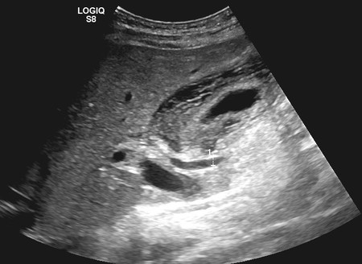
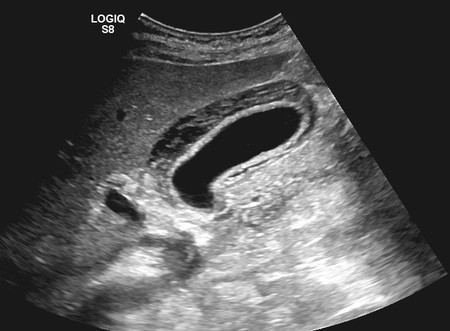
AEmphysematous cholecystitis(8%)
BAcute acalculous cholecystitis(23%)
CGallbladder carcinoma(1%)
DHepatitis(67%)
ECholelithiasis(0%)
Your answerD
Correct answerD. Hepatitis
Vital Concept
Acute hepatitis commonly causes diffuse gallbladder wall thickening without gallbladder distension, distinguishing it from acute cholecystitis which typically shows both wall thickening and distension. The sonographic appearance of hepatitis varies but can include "starry sky" appearance.
Explanation
Hepatitis
The degree of wall thickening in the gallbladder without significant distention makes this the most likely diagnosis. While the typical appearance of hepatitis is thought to be the "starry sky" with diffuse hypoechogenicity throughout the liver, in reality, there is wide variability in the sonographic appearance of hepatitis, with diffuse gallbladder wall thickening often a common finding. This patient ended up having fulminant hepatic failure secondary to drug toxicity.
Incorrect Answers:
A. In emphysematous cholecystitis, ultrasonography demonstrates echogenic reflectors in the gallbladder wall with low-level posterior shadowing/dirty shadowing/ring-down artifact. A less common but more specific finding is non-shadowing echogenic foci in the gallbladder wall rising up from the dependent portions.
B. As stated above, the degree of gallbladder wall thickening is much greater than expected for cholecystitis. No appearance of significant gallbladder distention also goes against this diagnosis. Acalculous cholecystitis is typically seen in extremely sick patients who have been in the ICU for an extended period of time.
C. The diffuse gallbladder wall thickening is too uniform for carcinoma to be a consideration; there is no invasion into the adjacent liver, nor does the patient's age fit the typical age group for gallbladder carcinoma.
E. No stones are seen within the gallbladder. The degree of gallbladder wall thickening points to another etiology as the source of the patient's elevated liver function test.
Vital Concept: Acute hepatitis commonly causes diffuse gallbladder wall thickening without gallbladder distension, distinguishing it from acute cholecystitis which typically shows both wall thickening and distension. The sonographic appearance of hepatitis varies but can include "starry sky" appearance.
Q31
hard QID 20788
Correct
Which of the following is the most likely diagnosis in this 58-year-old female patient with left hand pain?
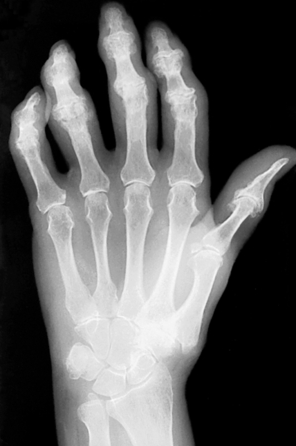
ARheumatoid arthritis(3%)
BOsteoarthritis(15%)
CErosive osteoarthritis(69%)
DPost-traumatic arthritis(0%)
EPsoriatic arthritis(13%)
Your answerC
Correct answerC. Erosive osteoarthritis
Explanation
Erosive osteoarthritis
Frontal radiograph of the hand shows multicentric DIP and several PIP joint erosions with symmetric cartilage space narrowing and mild soft tissue swelling. These findings are most consistent with erosive osteoarthritis.
Incorrect Answers:
A. Rheumatoid arthritis is incorrect, as findings include erosive cartilage space narrowing and osteopenia, with a characteristic distribution of the proximal hand joints (PIPs and MCPs) as well as the carpal and radiocarpal joints.
B. Findings of osteoarthritis include osteophyte production in the setting of cartilage space narrowing. OA characteristically affects distal joints in the hands (DIP, PIP), producing Heberden’s and Bouchard’s nodules.
D. In post-traumatic arthritis there are altered mechanics at the joint secondary to non-anatomic alignment following old, healed trauma. There is no evidence of prior trauma or non-anatomic alignment of the joints in this case.
E. The characteristic findings of psoriatic arthritis include soft tissue swelling (sausage digit), asymmetric cartilage space narrowing, and fluffy periostitis. These changes can lead to late findings of pencil-in-cup deformities and arthritis mutilans.
Q32
hard QID 2873
Correct
A 48-year-old female presents with akinetic mutism and myoclonus. The following magnetic resonance images (MRI) were obtained. Which of the following is the etiology of the most likely diagnosis?
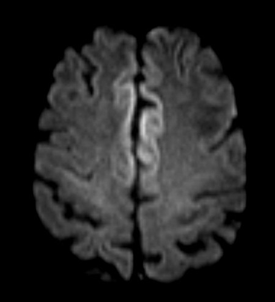
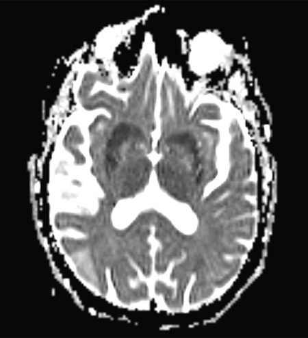
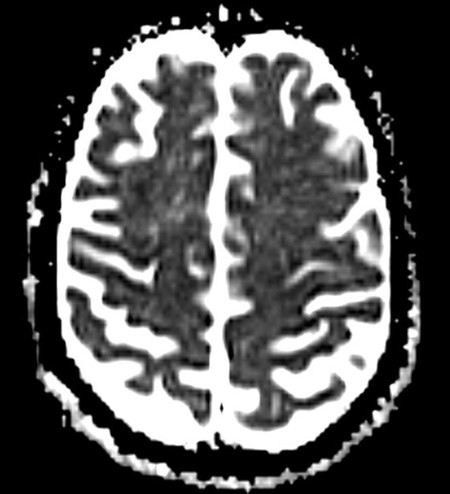
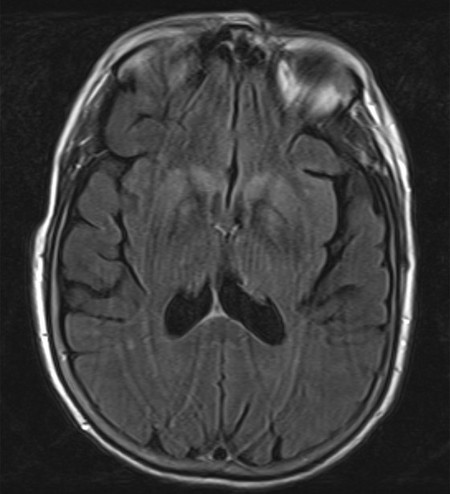
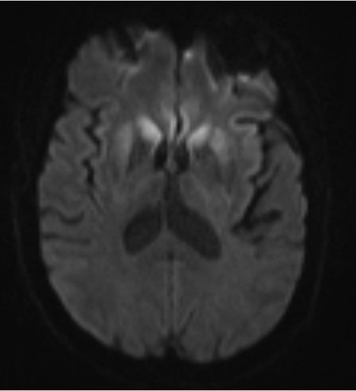
AIatrogenic(5%)
BZoonotic(12%)
CInfectious transmission from human to human(8%)
DSporadic(59%)
EInherited(15%)
Your answerD
Correct answerD. Sporadic
Vital Concept
The classic combination of rapidly progressive dementia, akinetic mutism, and myoclonus with the characteristic MRI pattern of cortical and striatal restricted diffusion strongly indicates sporadic CJD, the most common form representing the majority of prion disease cases in the absence of family history or known exposure risk factors.
Explanation
Sporadic
The presence of myoclonus and akinetic mutism are 2 of the 4 clinical criteria for Creutzfeldt-Jakob disease (CJD). The other two are pyramidal/ extrapyramidal symptoms and visual or cerebellar signs.
The presence of restricted diffusion and abnormal FLAIR signal in the caudate and basal ganglia, as well as frontal/cingulate cortex, is one of the laboratory criteria (also positive 14-3-3 CSF assay or typical EEG periodic sharp wave complexes).
Two clinical and one laboratory criteria are required for a "probable" diagnosis. The overwhelming majority of cases of CJD (>85%) are sporadic.
Incorrect Answers:
A. Iatrogenic causes are <1% of cases.
B. Transmission from animals, typically bovine, are <1% of cases.
C. Transmission from human to human or between species is exceedingly rare.
E. The inherited form of CJD accounts for only 5% to 10% of cases.
Vital Concept: The classic combination of rapidly progressive dementia, akinetic mutism, and myoclonus with the characteristic MRI pattern of cortical and striatal restricted diffusion strongly indicates sporadic CJD, the most common form representing the majority of prion disease cases in the absence of family history or known exposure risk factors.
Q33
QID 43996
Correct
Which of the following is the most frequent site of the pathology shown below?
AAnterior communicating artery(83%)
BPosterior communicating artery(7%)
COphthalmic artery(0%)
DMiddle cerebral artery(9%)
EVertebrobasilar circulation(1%)
Your answerA
Correct answerA. Anterior communicating artery
Vital Concept
The most frequent sites of saccular aneurysms are anterior communicating artery (39%), internal carotid artery at the ostia of the posterior communicating artery and ophthalmic artery (30%), middle cerebral artery (22%), and the vertebrobasilar circulation (8%).
Explanation
Anterior communicating artery
The computed tomography angiogram (CTA) shows bilateral saccular aneurysms involving the middle cerebral arteries (yellow arrows). Saccular aneurysms have an annual rupture rate of 0.5% to 2% with a tendency toward rupture increasing with size, particularly those greater than 10 mm.
The most frequent sites in descending order are the anterior communicating artery (39%), internal carotid artery, specifically at the ostia of the posterior communicating artery and ophthalmic artery (30%), middle cerebral artery (22%), and the vertebrobasilar circulation (8%).
Saccular aneurysms are a frequent cause of subarachnoid hemorrhage. However, no abnormality is found in 2% to 5% of cerebral angiograms. Repeat angiogram may show aneurysm in 10% to 20% of cases. Rebleeding occurs in ~ 20% of untreated patients within 2 weeks of initial hemorrhage, in 30% by 1 month, and in 40% by 6 months.
Incorrect Answers:
B. C. The ostia of the posterior communicating artery and the ophthalmic artery is the second most common site of saccular aneurysms, not the first.
D. The CTA shows bilateral saccular aneurysms involving the middle cerebral arteries. This question inquiries about the most frequent site of the pathology shown. The most frequent site of saccular aneurysms is the anterior communicating artery. The middle cerebral artery is the third most common site of saccular aneurysms.
E. The vertebrobasilar circulation is the fourth most common site of saccular aneurysms, not the first.
Vital Concept: The most frequent sites of saccular aneurysms are anterior communicating artery (39%), internal carotid artery at the ostia of the posterior communicating artery and ophthalmic artery (30%), middle cerebral artery (22%), and the vertebrobasilar circulation (8%).
Q34
hard QID 5051
Correct
Which of the following is most true regarding release of a patient treated with 131I ablation?
AEffective dose to a member of the patient's immediate family cannot exceed 1 mSv.(15%)
BRadiation dose cannot exceed 10 mrem (0.1 mSv) per hour at 1 meter from the patient's chest.(18%)
CThe patient may be released if less than 33 mCi of 131I was administered without further monitoring.(64%)
DThe patient's urine must be collected and disposed of in a radioactive waste container for 1 week.(2%)
EThe patient must be hospitalized unless the patient lives alone.(1%)
Your answerC
Correct answerC. The patient may be released if less than 33 mCi of 131I was administered without further monitoring.
Vital Concept
After 131I therapy, a patient may be released if a dose less than 33 mCi was administered.
Explanation
The patient may be released if less than 33 mCi of 131I was administered without further monitoring.
If less than 33 mCi of 131I was administered, the patient may be released without further monitoring.
Incorrect Answers:
A. Effective dose to a member of the patient's immediate family cannot exceed 5 mSv.
B. Radiation dose cannot exceed 7 mrem (0.07 mSv) per hour at 1 meter from the patient's chest prior to release.
D. Although the urine of a patient treated with 131I may be radioactive, the excreta of patients who receive ablative therapy with 131I is not regulated by the NRC. There is no recommendation to dispose of the urine in radioactive waste containers and disposal in the public sewage system is accepted.
E. A patient treated with 131I is advised to maintain a distance of greater than 1 meter from others in the home for 5 to 7 days. Provided that the predicted dose to the patient's partner or caregiver does not exceed 5 mSv, the patient may be discharged home. Instructions should be provided to the patient if the estimated dose to a patient's caregiver might exceed 1 mSv.
Vital Concept: After 131I therapy, a patient may be released if a dose less than 33 mCi was administered.
Q35
easy QID 21118
Correct
A 43-year-old male patient presents for follow-up evaluation. Which of the following is the diagnosis?
The findings in this case are suggestive of ADPKD. CT demonstrates enlarged kidneys with innumerable cysts (blue arrows). Other organs are frequently affected by cyst formation, including liver (green arrow), pancreas, and rarely, pelvic organs including ovaries and testes. CT may also demonstrate complicated cysts with associated hyperdense blood products. Care must be taken to evaluate for enhancing nodularity, as renal cell carcinoma can be difficult to detect in these cases.
Incorrect Answers:
B. ARPKD is a pediatric diagnosis in which there are bilateral symmetrically enlarged kidneys that are hyperechoic on sonographic evaluation. There are varying degrees of associated hepatic fibrosis, generally with more severe hepatic fibrosis found in cases of less severe renal disease.
C. MCDK is a pediatric diagnosis that is typically diagnosed in utero, with ultrasound demonstrating multiple noncommunicating cysts with echogenic intervening renal parenchyma. There is eventual involution of the affected kidney, which over time may become shrunken and calcified.
D. Caroli’s disease is a form of choledochal cyst in which there is diffuse intrahepatic cyst formation with the characteristic dot sign, which represents enhancing biliary radicles within the cystic spaces.
E. Metastatic RCC, though conceivable, is not a good choice in this case, as RCC typically is a hyperenhancing mass. Contralateral hypoenhancing diffuse renal metastasis and hepatic metastasis would be an unusual presentation.
Q36
hard QID 43734
Correct
Which of the following is true regarding the most likely diagnosis in this 12-year-old patient with mild painless epistaxis, recurrent nasal congestion, and discharge?
AIt is only seen in the first and second decades of life.(6%)
BThe overall prognosis is good relative to other malignancies in this location, if it remains localized.(62%)
CIt arises from goblet cells in the olfactory mucosa.(20%)
DSurgical resection alone is the typical treatment.(8%)
EIt enhances less than most other tumors in this location.(4%)
Your answerB
Correct answerB. The overall prognosis is good relative to other malignancies in this location, if it remains localized.
Explanation
The overall prognosis is good relative to other malignancies in this location, if it remains localized.
The images provided show a primarily solid and avidly enhancing irregular mass centered at the cribriform plate (blue arrow) with extension superiorly into the anterior cranial fossa (purple arrow) and inferiorly into nasopharynx (green arrow). Based on this appearance, a diagnosis of esthesioneuroblastoma is most likely. Compared to other sinonasal malignancies, the prognosis is good, with a 5-year survival rate >60% when localized/in the absence of distant metastases. Small, localized tumors have a high cure rate, up to 85 to 90%.
Incorrect Answers:
A. There is a bimodal distribution in the 2nd and 6th decades, thus both adolescent and middle-aged patients may be affected.
C. Esthesioneuroblastoma represents a malignant neuroectodermal tumor arising from olfactory neuroepithelium in the superior nasal cavity. The most common presentation is unilateral nasal obstruction and mild epistaxis.
D. Combined surgical resection and radiation is the treatment of choice.
E. One of several distinguishing features of esthesioneuroblastoma is its degree of avid enhancement, which is typically much greater than other tumors in this location (squamous cell carcinoma, adenocarcinoma, non-Hodgkin lymphoma).
Q37
hard QID 2938
Correct
The dose equivalent to the embryo/fetus during the entire pregnancy should not exceed which of the following?
A0.05 mSv(7%)
B5 mSv(75%)
C0.5 mSv(16%)
D50 mSv(2%)
Your answerB
Correct answerB. 5 mSv
Explanation
5 mSv
According to the 2025 ABR RISC Study Guide and § 20.1208 of the NRC guidelines, the dose equivalent to the embryo/fetus during the entire pregnancy should not exceed 5 mSv.
Q38
moderate QID 39270
Incorrect
A 33-year-old female patient is referred for a pelvic ultrasound due to 4-month history of worsening pelvic pain. An ultrasound of their right ovary is shown below. Which of the following is the next appropriate step in management?
ANo follow-up required.(5%)
B12-month follow-up ultrasound.(2%)
CTissue sampling.(2%)
DComputed tomography (CT) scan for further evaluation.(7%)
EPelvic magnetic resonance image (MRI) for further characterization.(85%)
Your answerD
Correct answerE. Pelvic magnetic resonance image (MRI) for further characterization.
Explanation
Pelvic magnetic resonance image (MRI) for further characterization.
The ultrasound images of the right ovary show a complex, cystic, and solid, multilocular mass with numerous thin septations (blue arrow), which contain low-level internal echogenicity (purple arrow). There is an internal flow on color Doppler imaging (yellow arrow).
These sonographic features are suggestive of a lesion on the mucinous epithelial tumor spectrum (cystadenoma, borderline tumor, or less likely cystadenocarcinoma). As such, this requires further characterization, and MR is the most sensitive and specific with regards to pelvic masses and is useful in preoperative planning.
Incorrect Answers:
A. Given that this has the potential to be a malignant lesion, the option to do nothing is incorrect.
B. 12-month follow-up ultrasound is incorrect. Again, this might be a malignant lesion (cystadenocarcinoma). Even if it lies on the more benign end of the epithelial mucinous tumor spectrum (cystadenoma, borderline tumor), more definitive characterization is necessary as it will ultimately require surgical excision.
C. With cancer of the ovary, a diagnosis from the biopsy is uncommon before major surgery and is presumed from a characteristic clinical presentation of elevated levels of the tumor marker CA-125 and a typical pattern of imaging showing a complex pelvic mass with or without evidence of peritoneal spread. One reason is the fear of seeding the peritoneum in the event that it is a malignant lesion.
D. CT is less sensitive in its evaluation of the ovaries and adnexa than MR.
Q39
moderate QID 48961
Incorrect
Which of the following will decrease spatial resolution in CT?
AIncrease pitch(82%)
BDecrease pixel size(4%)
CDecrease detector width/detector aperture(11%)
DDecrease field of view(3%)
Your answerC
Correct answerA. Increase pitch
Vital Concept
Higher pitch reduces CT spatial resolution (especially z-axis) due to decreased data sampling, while lower pitch improves resolution but increases scan time - a speed versus quality trade-off.
Explanation
Increase pitch
As pitch increases, spatial resolution will decrease in the Z direction. The width of the slice selectivity profile widens, leading to increased slice thickness and degradation of spatial resolution. Decreasing pixel size, decreasing detector width, and decreasing field of view will all increase spatial resolution.
Vital Concept: Higher pitch reduces CT spatial resolution (especially z-axis) due to decreased data sampling, while lower pitch improves resolution but increases scan time - a speed versus quality trade-off.
Q40
hard QID 2880
Correct
A 7-year-old patient with a history of recent appendectomy 6 months prior presents with colicky abdominal pain for 1 day. Abdominal radiography and ultrasound were performed and shown below. Which of the following is the most likely diagnosis in this patient?
AAcute appendicitis, simple(1%)
BAcute appendicitis with abscess(0%)
CGastroenteritis(0%)
DInternal herniation(14%)
EIntussusception(85%)
Your answerE
Correct answerE. Intussusception
Vital Concept
Intussusception lead points are more common in neonates (< 30-days-old), older children (> 5-years-old), and cases restricted to the small intestine. For example, intussusception of the small intestine is common in Peutz-Jeghers syndrome, in Henoch-Schönlein purpura, and after surgery.
Explanation
Intussusception
The final diagnosis in this patient was intussusception. Intussusception most commonly presents in patients less than 2-years-old with a 2:1 male:female ratio and higher incidence during the fall and winter when there may be enlarged lymph nodes acting as a lead point.
In older children (and in adults), an anatomic abnormality such as a mass or Meckel's diverticulum should be suspected as a potential lead point. In this patient, radiography demonstrates dilated loops of small bowel consistent with obstruction. There is also absence of bowel in the right lower quadrant, which would be compatible with intussusception in this location.
Ultrasonography demonstrates a loop of bowel telescoped into another loop of bowel consistent with intussusception. The presence of a small focus of an echogenicity (i.e., fluid) within the intussusceptum (toward the right of the image) is due to fluid trapped within the Meckel's diverticulum.
Incorrect Answers:
A. B. Appendicitis in this case is unlikely due to prior appendectomy (as provided in the question stem).
C. Gastroenteritis in the pediatric population is a very common condition that accounts for around 10% of pediatric deaths and is the second cause of death worldwide. The most common cause in infants younger than 24-months-old is rotavirus, and after 24 months of age, shigella becomes the most common cause and rotavirus the second most common.
Microscopic stool examination and culture can narrow the causative agent. Mucus, blood or leukocytes may indicate the agent. There is little role for radiographic examination unless clinical history is unclear.
D. Internal herniation is typically diagnosed by CT and is uncommon in children. Common features are encapsulated bowel loop in an abnormal location and arrangement of small bowel loops within a hernial sac.
Vital Concept: Intussusception lead points are more common in neonates (< 30-days-old), older children (> 5-years-old), and cases restricted to the small intestine. For example, intussusception of the small intestine is common in Peutz-Jeghers syndrome, in Henoch-Schönlein purpura, and after surgery.
Although lead points can be detected with a contrast enema study, they can easily be missed or even reduced with this technique. Ultrasound allows better detection and characterization of lead points than does a contrast enema study.
Q41
easy QID 5003
Correct
A 1-year-old male presents with a high thyroid-stimulating hormone level, accompanied by low levels of T3 and T4. A thyroid uptake scan is ordered and shown below. Which of the following is the diagnosis?
ANormal thyroid(0%)
BHypoplastic thyroid(1%)
CLingual thyroid(97%)
DAbsent thyroid(1%)
Your answerC
Correct answerC. Lingual thyroid
Vital Concept
Scintigraphy shows tracer uptake at the tongue base with absent pretracheal uptake indicating that the ectopic tissue is most likely the sole functioning thyroid. This finding is crucial for surgical planning since removal would cause permanent hypothyroidism.
Explanation
Lingual thyroid
A focus of radiotracer uptake is seen at the base of the mouth/tongue; chin/sternal markers help confirm anatomical relationships. Location of tracer uptake near the level/posterior to the chin marker with absent tracer activity in the area of the sternal notch marker is most consistent with lingual thyroid. Lingual thyroid tissue occurs as a result of failure of caudal migration along the course of the thyroglossal duct cyst, extending from the foramen cecum to the anterior larynx.
Incorrect Answers:
A. The exam shows a focus of uptake along the center near the base of the tongue. Normal uptake should be located in the region of the mid-cervical neck.
B. While the correct diagnosis does not produce enough hormone and thus can be considered hypoplastic, the tissue is not in the expected location but rather at the base of the tongue.
D. A focus of uptake is present at the base of the tongue, consistent with the presence of thyroid tissue.
Vital Concept: Scintigraphy shows tracer uptake at the tongue base with absent pretracheal uptake indicating that the ectopic tissue is most likely the sole functioning thyroid. This finding is crucial for surgical planning since removal would cause permanent hypothyroidism.
Q42
easy QID 24482
Correct
Which of the following time spans must a medical event be telephonically reported to the Nuclear Regulatory Commission?
A1 day(92%)
B1 week(5%)
C2 weeks(2%)
D1 month(1%)
E1 year(0%)
Your answerA
Correct answerA. 1 day
Vital Concept
Medical events require telephone notification to the NRC Operations Center no later than the next calendar day after discovery, followed by a detailed written report within 15 days.
Explanation
1 day
NRC regulation § 35.3045(c) requires licensees to notify the NRC Operations Center by telephone no later than the next calendar day after discovering a medical event, followed by a written report to the appropriate Regional Office within 15 days of discovery.
Incorrect Answers:
B. C. D. E. These are incorrect reporting ranges.
Vital Concept: Medical events require telephone notification to the NRC Operations Center no later than the next calendar day after discovery, followed by a detailed written report within 15 days.
Q43
hard QID 43669
Correct
Which of the following is the most likely diagnosis in this 46-year-old patient with headache and right-sided sensorineural hearing loss?
AMeningioma(69%)
BVestibular schwannoma(29%)
CEpidermoid cyst(0%)
DFacial nerve schwannoma(1%)
EArachnoid cyst(0%)
Your answerA
Correct answerA. Meningioma
Explanation
Meningioma
The contrast-enhancing magnetic resonance image (MRI) shows a homogeneously cerebellar pontine angle (CPA) mass (purple arrow) that slightly extends into the internal auditory canal (IAC) (pink arrow). There is a broad-based dural tail (blue arrows).
This appearance is most suggestive of a meningioma. CPA meningiomas are less common than schwannoma. They involve the CPA more than the IAC.
Incorrect Answers:
B. Vestibular schwannoma would also appear as a solid enhancing mass. As stated above, they involve the IAC primarily and show widening of the porus acusticus. These extend into the CPA secondarily. They may have a fusiform or dumbbell shape (as with nerve sheath tumors elsewhere), and when large, have been described as having an ice cream cone configuration. Pertinent negatives are the absence of a dural tail.
C. An epidermoid cyst would not show enhancement. Its characteristic MR feature is restricted diffusion, and often, lack of complete fluid suppression on FLAIR (the so-called dirty CSF appearance).
D. Facial nerve schwannoma is a rare tumor, typically confined to the temporal bone, as it originates in the facial nerve canal. They may occasionally extend into the IAC, however CPA extension would be highly unlikely, as it would require the mass to be quite large.
E. An arachnoid cyst is a relatively common CPA mass. No enhancement would be seen, and the mass would follow fluid signal intensity on all sequences.
Q44
easy QID 22622
Correct
A 4-month-old female patient presents for evaluation of repeated bouts of pyelonephritis. A VCUG is performed. Which of the following is the grade of reflux?
ALeft, grade 3; Right, grade 2(4%)
BLeft, grade 5; Right, grade 4(96%)
CLeft, grade 1; Right, grade 3(0%)
DLeft, grade 2; Right, grade 1(0%)
ELeft, grade 2; Right, grade 3(0%)
Your answerB
Correct answerB. Left, grade 5; Right, grade 4
Vital Concept
Voiding cystourethrogram is usually performed after an initial pediatric urinary tract infection in children under the age of 6 to identify and grade vesicoureteral reflux, which is associated with recurrent urinary tract infections and can result in scarring and renal failure if left untreated.
Explanation
Left, grade 5; Right, grade 4
This represents severe bilateral vesicoureteral reflux with the left showing gross ureteral dilatation, tortuosity, and loss of papillary impressions (Grade 5), while the right demonstrates moderate dilatation with complete obliteration of fornices but maintained papillary impressions (Grade 4). Antibiotic prophylaxis is essential to prevent breakthrough pyelonephritis, followed by renal ultrasound to assess for existing scarring and urgent urology referral for surgical intervention. High-grade bilateral reflux rarely resolves spontaneously and carries significant risk for progressive renal damage and eventual chronic kidney disease.
Incorrect Answers:
A.C.D.E. An internationally accepted reflux grading system has been developed for the purposes of standardizing reporting of reflux severity based on VCUG findings:
1: Reflux reaches the ureter but not the renal pelvis.
2: Reflux reaches the renal pelvis, with normal sharp renal calyces.
3: Calyces are mildly blunted.
4: Calyces are moderately blunted, and the ureter is mildly dilated.
5: Ureter is markedly dilated, with marked calyceal blunting. Intrarenal reflux present.
Vital Concept: Voiding cystourethrogram is usually performed after an initial pediatric urinary tract infection in children under the age of 6 to identify and grade vesicoureteral reflux, which is associated with recurrent urinary tract infections and can result in scarring and renal failure if left untreated.
Q45
moderate QID 47093
Correct
Which of the following is the diagnosis in this 65-year-old female patient with abdominal pain?
AAcute mesenteritis(0%)
BCarcinoid tumor(4%)
CMesenteric lymphoma(8%)
DDesmoid tumor(86%)
ECarcinomatosis(2%)
Your answerD
Correct answerD. Desmoid tumor
Vital Concept
Gardner syndrome features facial osteomas and predominantly intra-abdominal mesenteric desmoids, contrasting with sporadic desmoids which are typically extra-abdominal.
Explanation
Desmoid tumor
The combination of a discrete mesenteric mass which is isodense to muscle (green arrow) and a facial osteoma (blue arrow) should make one think of Gardner syndrome. Thus, this mass is a desmoid tumor, which is a benign but locally aggressive proliferation of fibrous tissue. Desmoid tumors typically displace but do not usually encase or tether mesenteric vessels and bowel, as in this case (red arrow).
Incorrect Answers:
A. Acute mesenteritis is a benign inflammatory condition that appears as increased attenuation of mesentery with fat stranding and induration. A thin (usually < 3 mm) pseudocapsule encasing the inflamed mesentery is often present, as well as a cluster of mildly enlarged mesenteric nodes. The left upper quadrant is the most common location. In chronic cases, there is development of fibrosis, which results in discrete fibrotic soft tissue mass with desmoplastic reaction.
B. Carcinoid tumors are a type of neuroendocrine neoplasm that can occur in a number of locations. In the abdomen, carcinoid tumors appear as a hypervascular mesenteric mass (with or without calcification). Surrounding desmoplastic reaction is a specific feature and may lead to occlusion of vessels and bowel obstruction.
C. Mesenteric lymphoma in its early phases has a non-specific appearance which includes mesenteric stranding and mildly enlarged nodes and may mimic mesenteric panniculitis. The nodes are typically larger, however, and later in the disease process they appear more discrete and confluent.
E. Carcinomatosis represents metastatic involvement of the mesentery. Tumor implants appear as discrete nodules and/or mesenteric thickening, very often with ascites. Additional implants are usually found elsewhere, such as omentum, surface of liver, spleen, or bowel.
Vital Concept: Gardner syndrome features facial osteomas and predominantly intra-abdominal mesenteric desmoids, contrasting with sporadic desmoids which are typically extra-abdominal.
Q46
moderate QID 2740
Correct
Which of the following is the most likely explanation for the low-signal structure indicated by the arrow?
AEndometriotic implant(90%)
BSimple cysts(4%)
CFibroid(3%)
DFibroma(3%)
EAdenomyosis(1%)
Your answerA
Correct answerA. Endometriotic implant
Vital Concept
The presence of endometriomas on imaging should prompt search for more subtle findings of endometriosis (such as endometriotic implants).
Explanation
Endometriotic implant
The T1 (fat sat) and T2 weighted images at the level of the ovaries reveals the typical appearance of endometriomas, which are high signal on T1 (indicating blood) and demonstrate less intense signal on T2, a feature referred to as "T2 shading," indicating chronic hemorrhagic material.
Encountering ovarian endometriomas should prompt a thorough search for deep pelvic endometrial implants that typically manifest as low-signal masses, which may involve the uterosacral ligaments, round ligaments, bladder, colon, and abdominal scars from prior surgeries. Detection of these lesions is extremely important because successful treatment requires removal of all lesions, and exploratory laparoscopy can easily miss deep endometriotic lesions that may be hidden by adhesions or located in the subperitoneal space. Implants are typically T1 hyperintense and T2 hypointense.
Incorrect Answers:
B. Simple cysts demonstrate T1 hypointensity, and T2 hyperintensity. The collections here demonstrate T1 hyperintensity, which would not be seen with a simple cyst.
C. MRI is not generally required for the diagnosis of uterine fibroids. It is, however, the most accurate modality for detecting, localizing, and characterizing fibroids. Size, location, and signal intensity should be noted. The visualized portions of the uterus have no evidence of fibroids.
D. MRI features of ovarian fibromas and fibrothecomas depend on size, with capsule and degenerative changes common with fibromas and fibrothecomas larger than 6 cm. Fibromas and fibrothecomas enhance less than myometrium and fibroids do, and less than 75% maximum percentage enhancement can help in differentiating fibromas and fibrothecomas from fibroids. These findings are generally hypointense on both T1 and T2.
E. A thickness of the junctional zone of at least 12 mm is the most frequent MRI criterion in establishing the presence of adenomyosis. Adenomyosis can appear as a diffuse or focal form. Adenomyosis is often associated with hormone-dependent lesions such as leiomyoma, deep pelvic endometriosis and endometrial hyperplasia/polyps. On MRI, this finding is usually depicted on sagittal view: no specific evidence of adenomyosis on the provided images.
Vital Concept: The presence of endometriomas on imaging should prompt search for more subtle findings of endometriosis (such as endometriotic implants).
Q47
moderate QID 37560
Correct
What is the appropriate Bi-RADS term for the finding seen on this fat-saturated post-contrast T1 subtraction image?
ABackground parenchymal enhancement(1%)
BNon-mass enhancement(78%)
CFocus of enhancement(2%)
DEnhancing mass(19%)
EIntrinsically high T1 signal(0%)
Your answerB
Correct answerB. Non-mass enhancement
Vital Concept
Non-mass enhancement (NME) on breast MRI is an enhancing area that is not a mass, may contain interspersed fat, and can extend over variable breast regions. Clustered ring enhancement pattern has the highest malignancy risk, while careful distinction from background parenchymal enhancement is crucial to avoid false-positives.
Explanation
Non-mass enhancement
Regional enhancement is seen in the posterior and central portion of the left breast (blue arrow). Non-mass enhancement describes the enhancement of an area that is not a mass. This includes enhancement patterns that may extend over small or large regions, and whose internal enhancement characteristics can be described as a pattern discrete from normal surrounding breast parenchyma. With the exception of homogeneous internal-enhancement patterns, non-mass enhancement will have areas or spots of normal glandular tissue or fat interspersed between the abnormally enhancing components.
Incorrect Answers:
A. Background parenchymal enhancement on breast MRI refers to normal enhancement of the patient's fibroglandular tissue. It is typically not as asymmetric as seen here. Breast tissue is under hormonal influence, and as such will vary in vascularity and physiology depending on the phase of the menstrual cycle. Background parenchymal enhancement peaks before the onset of menses and can lead to false-positive studies.
C. A focus of enhancement is a tiny spot of enhancement that is so small that it cannot otherwise be characterized. Its shape and margins are not seen clearly enough to be described. A focus does not clearly represent a space- occupying lesion or mass. In general, the focus is smaller than 5 mm.
D. An enhancing mass is a three-dimensional space-occupying lesion that comprises one process, usually round, oval, or irregular in shape.
E. Intrinsically high T1 signal is incorrect as this is a subtraction image, which is specifically designed to negate the effects of intrinsic high T1 signal (such as hemorrhage).
Vital Concept: Non-mass enhancement (NME) on breast MRI is an enhancing area that is not a mass, may contain interspersed fat, and can extend over variable breast regions. Clustered ring enhancement pattern has the highest malignancy risk, while careful distinction from background parenchymal enhancement is crucial to avoid false-positives.
Q48
easy QID 63419
Correct
45-year-old man with AIDS presents with acute shortness of breath. Based on the below image, what is the most likely diagnosis?
ACentrilobular emphysema(1%)
BPneumocystis jiroveci pneumonia(90%)
CBirt-Hogg-Dube syndrome(3%)
DNecrotizing pneumonia(1%)
ELymphangioleiomyomatosis(5%)
Your answerB
Correct answerB. Pneumocystis jiroveci pneumonia
Explanation
Pneumocystis jiroveci pneumonia
In a patient with AIDS, spontaneous pneumothorax in the setting of bilateral ground-glass opacities and thin walled cysts is highly suggestive of Pneumocystis jiroveci Pneumonia. Patients present with this infection typically with a CD4 count of less than 200. Cysts are present in about 30% of cases. This opportunistic infection can be treated with Trimethoprim-sulfamethoxazole.
Incorrect Answers:
A. Centrilobular emphysema represents destruction of respiratory bronchioles without a discrete wall, as opposed to the thin walled cysts seen in this case. Spontaneous pneumothorax is not a feature.
C. Birt-Hogg-Dube syndrome is rare and not associated with AIDS. Cysts in this syndrome are generally distributed within the lower lungs.
D. Necrotizing pneumonia would present with a more focal cavitary lesion, not bilateral cysts.
E. Though it can present with spontaneous pneumothorax (often preceding diagnosis), lymphangioleiomyomatosis is almost exclusively seen in women and would not be the likeliest diagnosis here.
Q49
moderate QID 49728
Correct
Which is the following utilized for?
ASpatial resolution on a gamma camera(85%)
BSpatial resolution on a PET camera(3%)
CSpatial resolution on a CT(4%)
DUniformity on a gamma camera(8%)
Your answerA
Correct answerA. Spatial resolution on a gamma camera
Vital Concept
Bar phantoms with narrow activity slits are used to measure spatial resolution of gamma cameras, primarily for intrinsic measurements without collimators but also applicable for extrinsic system measurements.
Explanation
Spatial resolution on a gamma camera
This is an image of a bar phantom. Typically, the bar phantom rests on top of the gamma camera collimator, while a uniform flood source is placed on top of the phantom. Images are then acquired until 10,000,000 counts are achieved, and lines are inspected for spatial resolution and linearity. In this four-quadrant bar phantom, the width of the spaces is equal to the widths of the bars. Extrinsic resolution is performed with the collimator on, while intrinsic resolution is performed with the collimator off. Extrinsic resolution utilizes a flood source while intrinsic resolution utilizes a point source.
Vital Concept: Bar phantoms with narrow activity slits are used to measure spatial resolution of gamma cameras, primarily for intrinsic measurements without collimators but also applicable for extrinsic system measurements.
Q50
QID 20778
Incorrect
The observation of which of the following would provide the definitive diagnosis of the pathology seen in the left breast?
ATumor emboli in dermal lymphatics.(72%)
BProliferation of monomorphic cells completely filling the ducts.(11%)
CSolid tumor with mixture of stromal and epithelial components.(13%)
DProliferation of monomorphic epithelial cells partially filling the ducts.(4%)
Your answerC
Correct answerA. Tumor emboli in dermal lymphatics.
Explanation
Tumor emboli in dermal lymphatics.
This patient has inflammatory cancer of the left breast; the pathology showed invasive ductal carcinoma, which is the most common. Notice the mammographically increased breast tissue density with bulky mass-like appearance, skin thickening, skin irregularity, and nipple retraction.
On MRI there is a contracted small left breast with large heterogeneously enhancing breast tissue and multiple masses, enhancing thickened skin, nipple retraction, involvement of the left pectoralis muscle, and a large left axillary lymph node. Tumor emboli in the dermal lymphatics at skin punch biopsy is definitive of this aggressive form of breast cancer.
Incorrect Answers:
B. This is the pathology of ductal carcinoma in situ (DCIS).
C. This is the pathology of fibroadenoma.
D. This is the pathology of atypical ductal hyperplasia (ADH).
Q51
hard QID 86022
Correct
A 42-year-old man undergoes computed tomography (CT) of his cervical spine for chronic neck pain. The CT scan reveals a 3-millimeter (mm) pituitary mass. The patient does not endorse any vision abnormalities or headaches. Visual field testing reveals no deficits. What is the most appropriate next step in the evaluation of this patient?
APituitary function testing(44%)
BRepeat CT scan in 6 months(16%)
CFull visual exam(6%)
DNo further evaluation is needed(34%)
Your answerA
Correct answerA. Pituitary function testing
Explanation
Pituitary function testing
Correct Answer:
A. Pituitary function testing.
This patient has an incidental finding of a 3 mm pituitary microadenoma.
For patients with pituitary incidentalomas, pituitary function testing is the most appropriate next step of those listed.
Incorrect Answers:
B. Follow-up imaging should be MRI if not contraindicated, not CT.
C. A full visual exam would only be specifically indicated in this context if the patient is symptomatic or if the incidental lesion is noted to contact/involve the optic chiasm.
D. Though this lesion is small, given its association with endocrine anomalies, there is additional work-up warranted, as delineated above.
Q52
moderate QID 2840
Correct
A 72-year-old female had bilateral subdural hematomas drained via bilateral anterior parasagittal craniotomies. Thirty-six hours following surgery she underwent CT. Which of the following is the diagnosis and what is the significance of this finding?
APneumocephalus; normal postoperative finding so no need for treatment(8%)
BPneumocephalus; if the patient has reduced consciousness, it may be treated within 48 hours(2%)
CPneumocephalus; if the patient has reduced consciousness, it must be treated emergently(89%)
DExtradural fat; if the patient has reduced consciousness, it may be treated within 48 hours(0%)
EExtradural fat; if the patient has reduced consciousness, it must be treated emergently(0%)
Your answerC
Correct answerC. Pneumocephalus; if the patient has reduced consciousness, it must be treated emergently
Vital Concept
The "Mount Fuji" sign indicates tension pneumocephalus requiring emergent intervention due to increased intracranial pressure.
Explanation
Pneumocephalus; if the patient has reduced consciousness, it must be treated emergently
Subdural air separating the frontal lobes and falx cerebri represents tension pneumocephalus with the pathognomonic "Mount Fuji" sign. The 36-hour timing is typical (most occur within 2 to 3 days post-surgery). Air becomes trapped under pressure via ball valve mechanism— air enters during surgery but cannot escape, creating a space-occupying lesion that compresses brain parenchyma and separates the frontal lobes. In the setting of reduced consciousness, neurosurgery must be notified for emergent treatment.
Incorrect Answers:
A. It is not a normal amount of postoperative air, and the frontal lobes are separated from the falx cerebri which is not seen normally in postoperative subdural drainage.
B. If the patient has reduced consciousness, it is a neurosurgical emergency and it should be threatened immediately.
D. E. It is not fat, it is air density.
Vital Concept: The "Mount Fuji" sign indicates tension pneumocephalus requiring emergent intervention due to increased intracranial pressure.
Q53
moderate QID 20814
Incorrect
A 63-year-old female patient presents with bowel incontinence and back pain. Which of the following is the diagnosis?
AChondrosarcoma(75%)
BOsteosarcoma(15%)
CMultiple myeloma(1%)
DGiant cell tumor(5%)
ENeurofibroma(4%)
Your answerB
Correct answerA. Chondrosarcoma
Explanation
Chondrosarcoma
Chondrosarcoma typically presents as a lytic mass lesion with internal chondroid matrix (ring and arc calcification – green arrow). While the presence of chondroid matrix is not always seen in chondrosarcomas, its presence is very suggestive of this diagnosis. Additionally, chondrosarcomas classically demonstrate internal lobular T2 hyperintense signal due to the high water content of associated hyaline cartilage (blue arrows). Heterogeneous enhancement is also seen, though nonspecific (red arrows).
Incorrect Answers:
B. Osteosarcomas are significantly blastic and should show significantly more calcific density by CT. On MR, they are hypointense on T1 and hyperintense on T2.
C. Multiple myeloma is another reasonable alternative in this case, as it often produces lytic masses that may extend to involve the epidural space and destroy surrounding bone. However, again, the presence of chondroid matrix should point elsewhere.
D. Giant cell tumor is also on the differential for lytic sacral lesions. They are often lytic, expansile lesions extending anterior to the sacrum. But again, the presence of chondroid matrix is not characteristic for giant cell tumors.
E. Neurofibromas may also affect the sacrum. However, they tend to produce pressure expansion of neural foramina without frank osseous destruction. Also, the presence of ring and arc chondroid matrix is not supportive of neurofibroma.
Q54
easy QID 43984
Correct
What is the diagnosis in this 28-year-old female with altered mental status and headache?
The non-contrast CT images show hypodensity in the cortical gray and subcortical white matter of the left parietal lobe (yellow arrows) with some hyperdense hemorrhage (red arrow). The angiogram shows non-opacification of the left transverse sinus (green arrow), which makes the diagnosis of a dural sinus thrombosis-related infarction.
The diagnostic imaging features of dural sinus thrombosis can be subtle, as can the clinical presentation at times. Unlike most other intracranial vascular conditions, the presentation is highly variable, ranging from essentially asymptomatic to severe neurological dysfunction. Findings on non-contrast CT include hyperdensity in the venous sinuses, cerebral or cortical edema not in an arterial distribution, and unilateral or bilateral cortical or peripheral venous hemorrhage. CT venography greatly increases the sensitivity and specificity of imaging, where a filling defect in a sinus can then be appreciated.
Incorrect Answers:
A. Cerebral contusion most often occurs in regions of bony prominence (skullbase), have a coup and countercoup pattern of injury (which are not seen here), and would not account for the CT venogram finding.
B. The findings in this case are not in an MCA territory distribution.
C and E. No vascular malformation or tumor vascularity are appreciated on the angiographic exam.
Q55
QID 2887
Correct
A provider is revising their helical MDCT body pediatric scanning protocols as part of an effort to reduce radiation dose from CT. Which of the following changes would in fact increase the radiation dose to the patient?
AUsing iterative reconstruction algorithms(3%)
BUsing a bowtie filter(13%)
CUsing fewer detectors in the z-axis from the MDCT detector array(77%)
DUsing active collimation at the start and end of the z-range(6%)
EImplementing ALARA principles in CT imaging(2%)
Your answerC
Correct answerC. Using fewer detectors in the z-axis from the MDCT detector array
Vital Concept
Fewer detectors in the z-axis increase patient dose due to overbeaming—the x-ray beam penumbra extends beyond the detector width, creating "wasted dose" that contributes to patient exposure but not image formation. More detector rows capture a larger fraction of the useful beam, making dose delivery more efficient for equivalent anatomical coverage.
Explanation
Using fewer detectors in the z-axis from the MDCT detector array
Many strategies can be used to decrease dose. Decreasing kVp, decreasing mAs, and increasing pitch are traditional ways of reducing dose. Newer hardware and software strategies are now being used more commonly to further reduce patient dose. When using MDCT there is a certain amount of wasted radiation dose due to over-irradiation in the z-axis (termed penumbra). This over-irradiation is necessary for uniform x-ray exposure of the detector array in the z-axis. Therefore, when fewer detectors are used in the z-axis, more rotations will be necessary to cover the desired anatomy and the patient will be exposed to an increased number of penumbras, thereby increasing dose. Using fewer detectors in the z-axis will increase the dose, making this the correct answer. When scanning patients in helical mode, there is the phenomenon called over-ranging (or over-scanning) where half a rotation at the beginning and end of the scan range is necessary to construct the beginning and ending images. This is the result of a narrower beam. The amount of over-ranging is proportional to the pitch.
Incorrect Answers:
A. Iterative reconstruction algorithms are being developed by all vendors as a post-scan method of optimizing signal-to-noise, thereby allowing decreased dose without increasing image noise.
B. A bowtie filter causes a greater x-ray flux centrally and a lower flux peripherally, which makes sense as the body is thicker centrally and thinner peripherally. The patient must be correctly centered to get maximum benefits from this technique.
D. Active collimation at the start and end of the z-scan range, currently available from at least two vendors, actively blocks "wasted" radiation from passing through the patient. Automatic exposure control decreases the beam current (i.e. mA) based on the thickness of the anatomy being scanned. This can be done along the z-axis and in the axial plane itself. Data for current modulation may be derived from the initial scout or from real-time data from the diagnostic scan.
E. ALARA in pediatric CT means "child-size radiation for child-size patients"—systematically adjusting every technical parameter (kVp, mAs, scan range) to patient size rather than using standard adult protocols.
Vital Concept: Fewer detectors in the z-axis increase patient dose due to overbeaming—the x-ray beam penumbra extends beyond the detector width, creating "wasted dose" that contributes to patient exposure but not image formation. More detector rows capture a larger fraction of the useful beam, making dose delivery more efficient for equivalent anatomical coverage.